FORT TICONDEROGA
Preservation, Evidence, Interpretation, and the Responsibility of Remembering

Return to Ticonderoga
We've explored the history. We have now seen what happened. But understanding what happened and how that affects us today is not quite the same thing as understanding why it happened. Because, in fact, history is really just a ripple through time.
An event happens, and then its consequences begin moving outward. Sometimes those consequences are immediate and obvious. Other times, they travel so far from the original event that we barely recognize the connection. A decision made centuries ago can shape the landscape we walk through today; a building that no longer exists can influence how we understand the people who lived there; and a choice about what to preserve can determine what future generations are able to see, touch, and learn.
That is one of the remarkable things about visiting a place like Fort Ticonderoga. The fort itself is not the American Revolution. The people who built it, fought over it, abandoned it, restored it, and eventually preserved it are separated from us by generations. Yet we can stand on those grounds today and encounter pieces of that history in a remarkably tangible way. The walls, the earthworks, the artifacts, the landscape, and even the things that are no longer there allow us to connect something that happened centuries ago to the world in which we live today.
But that experience can make preservation seem simpler than it actually is.
When we walk through a preserved historic site, it is easy to think of preservation as something almost passive: history happened, and someone simply made sure it didn't disappear. In reality, preservation is rarely passive. Someone had to decide that a particular place was worth saving—and why. Someone had to determine what could be restored, what should remain in ruins, what could be reconstructed, what should be left to archaeology, how much money should be spent, and what visitors should ultimately be shown. Even the decision to preserve something is a judgment about what we believe is important enough to carry forward.
And those judgments become considerably more complicated when preservation comes into conflict with something else we value.
What happens when a historic building occupies land that could otherwise provide housing? What happens when preserving an old neighborhood increases the cost of living for the people who live there? What happens when restoration requires millions of dollars that could be spent on schools, infrastructure, public safety, or other community needs? And what happens when the very act of preserving history creates economic benefits through tourism, employment, investment, and public activity that might otherwise disappear?
These are not hypothetical questions. They are questions cities have been answering, sometimes deliberately and sometimes without realizing that they were making a choice at all.
Philadelphia provides a particularly useful place to examine them. It is a city filled with history, but it is also a living city. People need homes. Businesses need space. Streets and utilities need to function. Neighborhoods change. Buildings deteriorate. Land becomes valuable. Every generation inherits a physical landscape shaped by the decisions of previous generations, and every generation has to decide what it is willing to sacrifice to preserve that landscape.
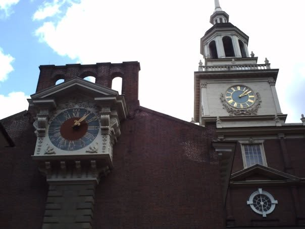
Fort Ticonderoga therefore gives us our starting point, but Philadelphia gives us our complication.
At Ticonderoga, the question of preservation can feel almost obvious: this place matters, so we preserve it. In Philadelphia, the question becomes harder. We are not simply deciding whether to save a battlefield or a fort. We are deciding what happens when the needs of the living collide with the physical remnants of the past—and whether there is a point at which preserving history itself can become an obstacle to other legitimate human needs.
That is where our investigation begins.
Because the question is not simply whether history should be preserved. The harder question is how much a society should sacrifice to preserve it—and how much history we should be willing to sacrifice for everything else we need.
Preservation Is a Choice
That brings us back to Ticonderoga. Standing there, it is easy to think that preservation was inevitable—that a place of such obvious historical importance was always destined to survive. It wasn't. Fort Ticonderoga has existed through periods of military usefulness, abandonment, deterioration, private ownership, restoration, and changing ideas about what historic places are supposed to be. The fact that we can walk through it today is the result of generations of decisions about what was worth saving, what could be saved, and what those decisions were intended to accomplish.1
And that distinction matters. Preservation does not mean freezing history at the moment it happened. The fort we experience today is itself the product of intervention: archaeological investigation, restoration, reconstruction, interpretation, maintenance, and choices about which periods of its history deserve emphasis. Some things survived because people deliberately protected them. Other things survived only as fragments. Still others disappeared entirely. What we encounter, therefore, is not simply the past—it is the past as successive generations have been able, and willing, to preserve it.
Behind the Glass
Look at these exhibits.
We know something about them. We know what they are, where they came from, what period they belong to, and in many cases something about the people who used them. We know that because someone, at some point, made a decision to preserve them.
And that is where the story becomes more interesting.
Because the museum visitor usually encounters preservation at the very end of the process. We see the object behind glass. We read the label. We move on to the next case.
What we do not see is everything that had to happen before the object could reach that case.
Consider something as deceptively simple as the Revolutionary-era knapsack displayed at Ticonderoga. The object itself is extraordinary: a piece of military equipment that survived the eighteenth century and was passed down through generations. But the museum does not simply possess a very old bag. It possesses the physical object and the information that allows us to understand it. The handwritten note displayed alongside it connects the artifact to a particular story and gives future researchers another piece of evidence to work with.
An artifact without context is an object. An artifact with preserved context can become historical evidence.
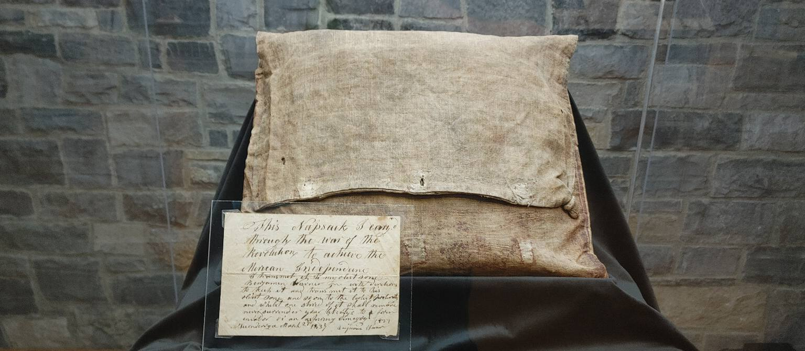
Fort Ticonderoga's own history demonstrates just how complicated that process can become.
The site's preservation story actually begins long before the modern museum. In 1820, William Ferris Pell purchased the former military grounds after decades of neglect and reuse had left the fort deteriorating. Pell did not immediately reconstruct the ruins. Instead, some of his earliest preservation efforts were remarkably simple: he fenced portions of the ruins and protected historic earthworks from further damage. Fort Ticonderoga itself describes Pell's actions as among the earliest efforts at historic preservation in American history.
That is an important place to begin because it reminds us that preservation does not necessarily mean restoration.1
Sometimes preservation means deciding not to rebuild. Sometimes it means stabilizing what remains. Sometimes it means protecting something from people, weather, development, or even well-intentioned intervention. And sometimes, as Ticonderoga's own history demonstrates, preservation means something much more ambitious.
By the beginning of the twentieth century, the philosophy surrounding the site had changed. Stephen Hyatt Pell became determined to restore Fort Ticonderoga, and in 1909 reconstruction began under architect Alfred C. Bossom. The work transformed the surviving ruins into much of the fortification that visitors experience today, combining surviving eighteenth-century fabric with twentieth-century reconstruction. During that work, workers uncovered quantities of cannonballs, tools, china, glass, cutlery and other material. The Pells also began acquiring artifacts from descendants of people connected to the Revolutionary era. That collection eventually became the foundation of the Fort Ticonderoga Museum, established in 1931.1
That history creates an unavoidable question:
When we walk through Fort Ticonderoga today, how much of what we are seeing is the eighteenth century—and how much is the twentieth century's attempt to recover, reconstruct and explain the eighteenth century? The answer is: both. And that is not a criticism. It is what preservation actually is.
The fort we experience today is not simply an untouched survivor from the past. It is the product of generations of choices about what deserved protection, what could be reconstructed, what should remain in ruins, what could be learned through archaeology, and what story should be communicated to the public.
In other words, the preservation itself has a history. That becomes even clearer when we step inside the museum.
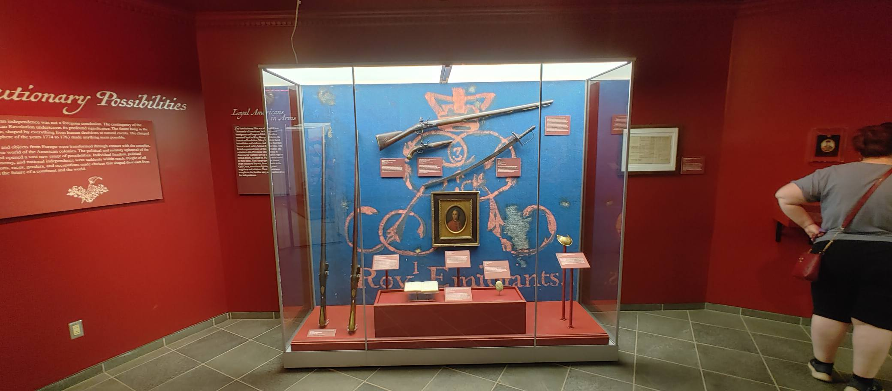
Look at what is happening here. The weapons are not merely sitting on shelves. They are mounted, positioned, illuminated, labeled and placed into a carefully constructed visual argument. Their arrangement tells us that these objects belong together, while the accompanying interpretation tells us why they matter.
The museum's collections now contain more than 200,000 artifacts,28
covering military and related material from the seventeenth through the early nineteenth centuries. Only a fraction of those holdings can ever be displayed at one time. That means an exhibit case is not simply a display. It is a selection.Someone has decided that these objects belong here, that these particular objects help tell this particular story, and that they can safely be placed into public view.
The decisions begin long before an exhibit designer places an artifact behind glass. Fort Ticonderoga's current collections work makes this especially apparent. When new material enters the collection, the institution assesses it, catalogs it, photographs it and creates a scholarly record. Its 2025 annual report describes this process in connection with the enormous Robert Nittolo Collection, noting that objects are documented so they can become part of a permanent scholarly record and be discoverable by researchers even when they are not physically exhibited.1
That last point is crucial. Preservation is not the same thing as display. In fact, the majority of a museum's collection is usually not on display. Something can be historically important without ever appearing in a gallery. Something can be too fragile to exhibit. Something can be awaiting conservation.
Something may be undergoing research. Something may simply be one of thousands of objects whose significance has not yet been fully understood. And sometimes an object is not even properly documented yet.
Ticonderoga has confronted that problem directly. A previous collections project involved objects that had little or no documentation and had spent years in unsuitable storage conditions. The museum undertook a systematic effort to clean, catalog, research and re-house them.1
That is the part of preservation that visitors almost never see. There is no dramatic battlefield charge involved. There is no cannon firing.
There is simply a museum professional asking: What is this? Where did it come from? What can we learn from it? How should it be stored? And how do we make sure the next generation can ask those questions too?
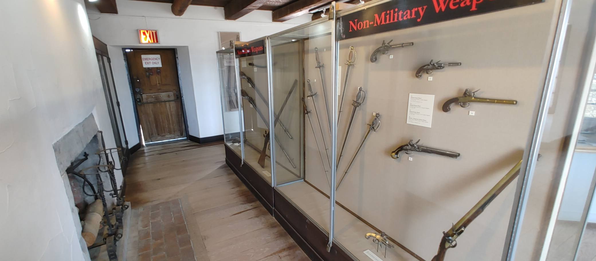
This case makes the point particularly well because it shows that preservation and interpretation are inseparable. Here, an artifact does not exist by itself. A portrait sits alongside clothing and documents. A newspaper becomes part of a larger story. A map provides geographic context. Labels explain relationships that the objects themselves cannot explain.
The museum is effectively building a conversation between pieces of evidence. And that means preserving history requires preserving more than objects. It requires preserving relationships between objects, documents, places and people. That is one reason archaeology matters so much at Ticonderoga. The landscape itself is part of the collection.1
The earth can contain evidence that was never recorded in writing: fragments of weapons, personal objects, construction materials, buttons, pottery and other remains that can reveal how people lived and fought at the site.
Ticonderoga's archaeology program treats the broader landscape as a historical resource in its own right. Its work at the Carillon Battlefield, for example, has included a comprehensive historical analysis and a condition-and-management assessment intended to guide the battlefield's long-term preservation.
In 2024, archaeological survey and excavation at Liberty Hill produced more than 500 artifacts, including musket parts, personal effects and regimental buttons associated with Continental soldiers in 1776. Those objects were documented and preserved, but they were not immediately placed on display. Some may eventually become part of future exhibitions.29
That is preservation in action. Discovery does not automatically mean display. First comes documentation. Then research. Then conservation.
Then decisions about storage, accessibility, interpretation and, eventually, whether the public should see the object at all.
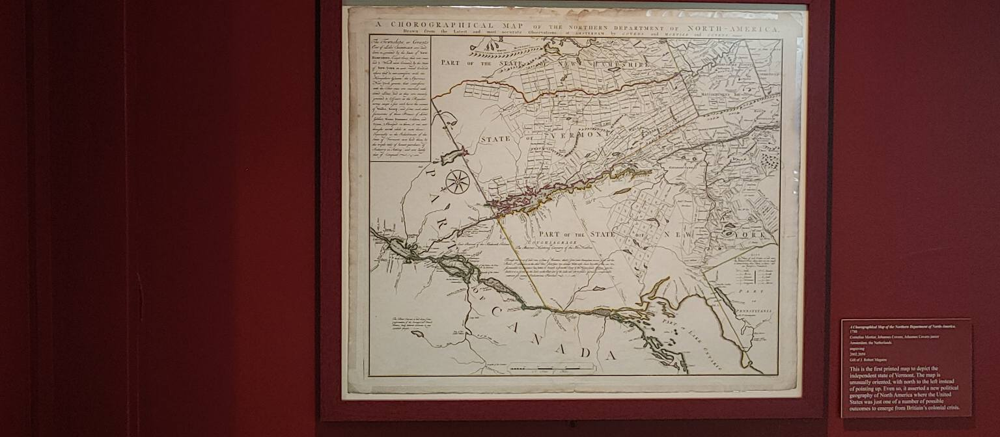
Paper presents yet another problem. A map may appear static and durable behind glass, but it is an extraordinarily vulnerable historical source. Light, humidity, temperature, pollutants, pests and handling can all threaten collections. Ticonderoga has undertaken preservation planning that specifically addresses environmental conditions, housekeeping, pest control, fire protection, security, disaster preparedness, storage, handling, exhibition and treatment. The same principle applies to the weapons in the cases.1
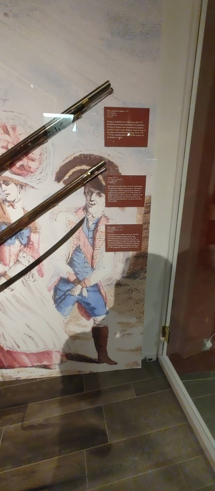
Metal, wood, textiles, paper and archaeological materials do not deteriorate in the same way. They cannot simply be stored under identical conditions and expected to survive indefinitely.
That is why preservation is partly a science. It is also an infrastructure problem. Ticonderoga has invested in upgraded climate-control systems specifically to create the environmental conditions necessary to protect its enormous collections, which include textiles, documents, weapons, art and archaeological materials.1
And infrastructure costs money.
The museum is a nonprofit educational organization. Its own reports make clear that its preservation and education mission depends upon donations and organizational proceeds, while major preservation projects have also relied upon state, federal, foundation and individual support.1
That means preservation is not simply a philosophical commitment. It is an institutional commitment. It requires buildings. It requires climate control. It requires storage. It requires archivists, curators, conservators, archaeologists, historians, collections managers and exhibit designers. It requires databases and documentation. It requires grants. It requires fundraising. And it requires someone to make decisions when resources are limited.
That is why I think there is something slightly misleading about the phrase “preserving history.” It makes preservation sound passive. It is anything but passive.
Ticonderoga has been making preservation decisions for more than two centuries. William Ferris Pell chose to protect ruins. Stephen Pell chose to reconstruct them. The Pells began assembling collections. Later generations expanded those collections, investigated the landscape archaeologically, created storage and conservation systems, developed exhibitions and increasingly digitized their holdings.
Today, that process continues in ways that would have been impossible for the people who first began protecting the site.
The institution is now working not only to preserve eighteenth-century artifacts, but also its own twentieth-century institutional history. It has begun projects to preserve first-person accounts from visitors and employees, recognizing that the history of the museum itself is becoming part of the historical record.
Even the archive needs an archive.
And increasingly, the work of preservation is extending into the digital world. Ticonderoga is processing previously inaccessible archival materials and developing new methods for making those collections discoverable to researchers and the public. A recent partnership with Historiq, for example, is focused on moving archival material from backlog into accessible finding aids and digital discovery.
Which brings us back to the glass.
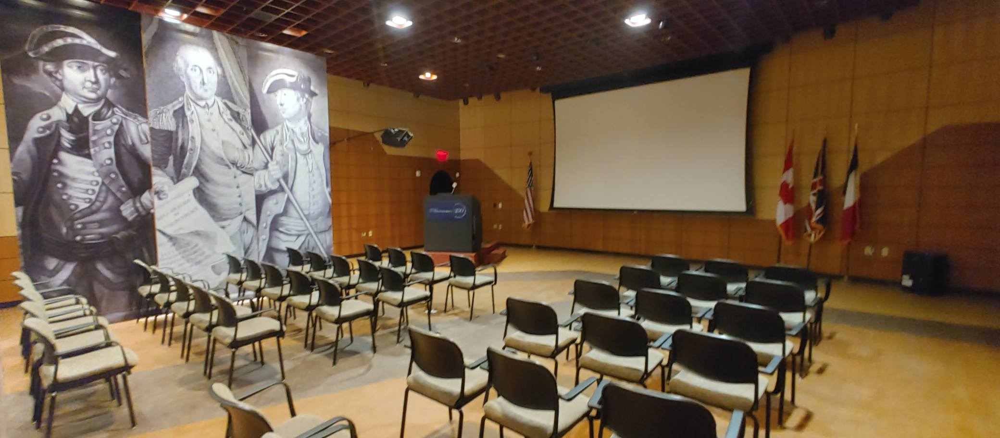
Because all of this work ultimately leads here. To the visitor.
Preservation is expensive. Conservation is technical. Archaeology is painstaking. Cataloging can be tedious. Storage is largely invisible. Research may take years. But the purpose is not simply to accumulate old things in climate-controlled rooms. The purpose is to make those things mean something.
The museum exists to take preserved evidence and turn it into knowledge that can be shared with people who did not live through the events those objects witnessed.
That is why the auditorium matters. The final stage of preservation is not the artifact sitting safely in storage. It is the artifact entering the public imagination. And that creates a tension that every serious historic institution has to confront:
How do you protect the past without locking it away from the present?
If you make an object too accessible, you can damage it. If you make it too inaccessible, you preserve the object but lose some of its educational value. If you reconstruct too aggressively, you risk creating something that looks historical without accurately representing what survived.
If you refuse to reconstruct anything, you may preserve authenticity at the expense of understanding.
If you preserve every object, every building and every landscape exactly as it is, you eventually run into the practical reality that history is not infinite—but resources are.
So preservation is ultimately an exercise in judgment. And that may be the most important thing I learned by looking at these exhibits. I came into the museum expecting to see artifacts from the past. Instead, I found myself looking at evidence of decisions made by people in the present and by generations of people before us.
The object behind the glass is only the visible part. Behind it is archaeology. Behind archaeology is documentation. Behind documentation is conservation. Behind conservation is money, labor, expertise and institutional priorities. And behind all of that is a much larger question:
What do we, as a society, decide is worth saving?
That question reaches far beyond Fort Ticonderoga. It is a question Philadelphia has had to answer. It is a question the Smithsonian has had to answer. And when we eventually compare the way those institutions preserve American history, the differences may be just as revealing as the similarities.
For now, though, standing here at Ticonderoga, one thing is clear. We are not simply looking at the past. We are looking at what generations of people decided the future should be allowed to remember.
There is also an important practical reality hiding underneath all of this: preservation costs something. Historic structures have to be stabilized. Archaeological sites have to be researched and protected. Grounds have to be maintained. Artifacts have to be conserved. Someone has to pay for the people who do that work, and someone has to decide whether the public benefit justifies the expense. In the case of a place like Ticonderoga, preservation can also generate an economic benefit of its own through visitors, tourism, employment, and the businesses that benefit from people coming to experience the site. The question, then, is not simply whether preservation has a cost, but whether what society receives in return makes that cost worthwhile.
That is a much more difficult question than it first appears. If we believe history matters, it is tempting to treat the cost of preserving it as almost beside the point. But resources are finite, and the needs competing with preservation are not necessarily frivolous. A community may need housing. A city may need infrastructure. A private owner may need to make a building economically viable. A government may have to choose between maintaining one historic structure and funding something else that serves people living today. Preservation deserves consideration, but so do the people who have to live with its consequences.
And that is precisely why Ticonderoga is such a useful place to begin this discussion. The fort presents us with a relatively easy case: a nationally significant historic site whose preservation allows millions of people, across generations, to encounter a physical piece of American history. Philadelphia gives us harder cases, because in Philadelphia history does not sit apart from everyday life. It occupies real land in neighborhoods where people need to live, work, build, invest, and change.
The first of those cases is particularly revealing because, in a sense, it is a case about something that isn't there anymore.
Franklin Court.
Franklin Court
The first of those cases is particularly revealing because, in a sense, it is a case about something that isn't there anymore. Franklin Court.
Benjamin Franklin's house stood on Market Street for nearly half a century. Franklin purchased the property in 1763, and the house became his Philadelphia home for the remainder of his life, even as his years as a diplomat and public figure kept him away from the city for long periods. His wife, Deborah, continued to live there, and after her death the property remained with the Franklin family. The house itself was not simply the home of a famous man; it was part of a working urban neighborhood that continued to change around it.2
Franklin died in 1790, but the house did not immediately become a museum. There was no preservation movement waiting to protect it, and no public institution had yet decided that the building needed to survive because of the person who had lived there. By the early nineteenth century, Philadelphia was changing rapidly, and the property had another value that had little to do with its connection to Franklin: land in the growing city was valuable.2
In 1812, Franklin's descendants made the decision to demolish the house and replace it with rental buildings. From their perspective, the decision was understandable. The family owned a valuable urban property, and the city around it was becoming denser and more commercially oriented. The house had served its original purpose, Franklin had been dead for more than two decades, and the property could generate income in a way that the old residence could not.2
But that decision also illustrates something we sometimes forget when we look backward at historic places: people living in the past did not know which parts of their present would become history.2
To Franklin's descendants, the house was an inherited property. To later generations, it became the lost home of one of the most consequential figures in American history. Those are not necessarily contradictory ways of seeing the same building. They are different ways of assigning value to it, separated by time.2
And for more than a century, that was that.
Then Philadelphia decided that the place mattered again.
And for more than a century, that was that. Then, generations later, Philadelphia decided that the place mattered again.
By the time the National Park Service began investigating Franklin Court in the twentieth century, there was no Franklin house to restore. There were clues: foundations, portions of the cellar kitchen, the old carriageway, a privy pit, and layers of archaeological material that could tell historians something about the people who had occupied the property. Archaeological investigation began in 1953 and continued through subsequent decades, gradually revealing more about the house and the world surrounding it.2
This is where Franklin Court becomes different from Ticonderoga. At Ticonderoga, preservation could begin with surviving walls and buildings. At Franklin Court, preservation had to begin with evidence. The physical structure was gone, but pieces of the story remained beneath the ground and in the documentary record.
That created a deceptively simple question: What do you build when you don't know enough to rebuild?
The people responsible for Franklin Court could have constructed a conventional reproduction of Franklin's house. They could have filled in the missing details with architectural assumptions and created something that looked convincingly eighteenth century. But doing so would have created another problem: it would have been a guess. The surviving evidence could establish the location and dimensions of the house, but it could not tell the whole story of what the building looked like. There simply wasn't enough surviving material to reconstruct the entire structure with confidence. So rather than pretend that the missing evidence existed, the designers chose to represent the building while making clear that the actual building was gone.3
The result is one of Philadelphia's strangest historic landscapes. Steel rises from the courtyard in the shape of a house that no longer exists, allowing visitors to walk through the approximate footprint and understand the scale and location of Franklin's home. But the steel does not pretend to be eighteenth-century brick, and it does not attempt to fool visitors into believing that Franklin's house somehow survived. It tells you, almost literally, this is where the house was.2
The National Park Service calls them “ghost structures,” and the name is appropriate. They are not the house; they are an acknowledgment of its absence.2
That distinction may seem architectural, but it is actually philosophical. Franklin Court makes a choice about honesty. It tells the visitor what survived, what was discovered, and, through the very form of the site, what is missing. The preservation does not erase the loss. It preserves the evidence of the loss.
And Franklin Court contains another irony that makes the question even more interesting: not everything disappeared. Along Market Street, buildings associated with Franklin survived. They had been altered, covered over, and changed by later generations, but beneath those changes, historical investigation found significant portions of the eighteenth-century buildings still intact. Where that original fabric survived, restoration was possible.3
So within a relatively small area, Franklin Court presents two different answers to the same preservation problem. Where the original fabric survived, preserve and restore it. Where it did not, represent what can be known without pretending to know what cannot. The contrast is important because it reminds us that preservation isn't one technique, and there isn't a single formula that tells us what to do with every historic place. 3
Sometimes the best thing we can do is stabilize and protect what remains. Sometimes we can reconstruct portions of what was lost because the evidence is strong enough to support it. And sometimes the most honest approach is to leave the absence visible. The challenge is determining which approach the evidence—and the purpose of the site—actually supports.
But even this apparently straightforward solution raises another question: Who decides what counts as enough evidence? Who decides when reconstruction becomes historical interpretation rather than historical reconstruction? Who decides whether a visitor needs the missing house represented in steel, or whether the foundations alone would be enough? And who decides what parts of Franklin's story deserve to be brought back into the landscape, while other parts remain in the archaeological record?
Those decisions matter because preservation is never simply about saving things. It is also about constructing the way future generations encounter what was saved. The moment we decide what to preserve, what to reconstruct, what to leave alone, and what to put behind glass, we are making choices about how the past will be experienced by people who weren't there to see it themselves.
That is what makes Franklin Court so useful as the next stop in this journey. At Ticonderoga, we saw a historic place that survived, but whose survival depended upon generations of decisions about what to preserve, what to reconstruct, and what to interpret. At Franklin Court, we encounter something more difficult: the place itself is gone.
What remains is evidence.
And Philadelphia has had to decide what to do with it.
What Is Preservation Worth?
There is another question we have to ask before we leave Franklin Court. Preservation is not free. Archaeological investigations cost money. Buildings have to be stabilized and maintained. Collections have to be cataloged, conserved, stored, insured, and protected. Exhibits have to be designed, staffed, updated, and eventually replaced. Even an empty space like Franklin Court requires an ongoing investment simply to remain a place where people can encounter the past.
That raises an uncomfortable question: what do we get in return?
The easiest answer is tourism. Historic sites bring visitors, and visitors spend money. They stay in hotels, eat at restaurants, visit museums, use transportation, shop in local businesses, and sometimes extend their trips because a particular place gives them a reason to come to Philadelphia in the first place. Historic preservation therefore has an economic dimension that is easy to overlook when we talk about it primarily as a cultural or civic responsibility.
Philadelphia has substantial evidence of that economic relationship. Studies of historic preservation in the city have found that preservation activity contributes not only to tourism but also to property values, construction activity, employment, and broader economic activity. The tourism industry itself generates billions of dollars in visitor spending and supports a large network of businesses and jobs throughout the region.
That doesn't mean we should reduce preservation to a balance sheet. A historic building isn't necessarily worth saving simply because it sells another hotel room or puts another person in a restaurant. If that were the standard, the preservation of history would become little more than another form of economic development. Some places matter even when the financial return is difficult to measure, and some historical truths are worth preserving precisely because they challenge us rather than because they attract visitors.
But the opposite argument is also incomplete. Preservation has costs, and pretending that those costs don't exist doesn't make them disappear. When a government, nonprofit organization, or private institution commits money to saving a historic place, that money cannot be spent somewhere else. There is an opportunity cost to preservation, just as there is to every other public investment.
So perhaps the better question isn't whether a historic site "pays for itself." Perhaps we should ask what kind of value it creates, and whether that value justifies the resources required to maintain it.
The answer can include dollars and cents. Tourism revenue matters. Jobs matter. Economic activity matters. The tax revenue generated by visitors and businesses matters. The economic impact of historic preservation is real, and Philadelphia has spent decades benefiting from the fact that people are willing to travel here to encounter places that could easily have disappeared.
But there is another kind of return that is harder to put on a spreadsheet.
A preserved historic place gives people something that a book or a photograph cannot quite provide: a physical relationship with the past. You can stand where someone stood. You can walk through the space where something happened. You can look at an object that was actually handled by someone who lived centuries ago. You can see the foundations of a building that no longer exists and understand, in a way that a paragraph cannot quite reproduce, that this wasn't always an empty courtyard.
That experience has value even when nobody can attach a precise dollar figure to it.
And this is where Franklin Court becomes particularly useful. Philadelphia spent resources preserving a place where Benjamin Franklin's house no longer exists. It spent money excavating the site, studying what was found, interpreting the evidence, constructing the ghost structures, maintaining the grounds, and creating a place where visitors can encounter the history of Franklin and eighteenth-century Philadelphia. 2
The result isn't simply a preserved property.
It is a public investment in memory.
And that is a much harder investment to evaluate than a highway, a bridge, or a new public building. We can measure the number of visitors who come to Franklin Court. We can estimate the economic activity those visitors generate. We can calculate the cost of maintaining the site. But how do we measure the value of a child seeing an archaeological foundation and realizing that the city beneath their feet has a history of its own? How do we measure the value of giving a community a physical connection to a past that otherwise exists only in photographs, documents, and books?
Those questions don't make the economic considerations irrelevant. They make them incomplete.
There is also a simpler return, and perhaps the most important one: education. Preserving historic places preserves evidence. The more evidence we have about how people lived, what they built, what they believed, what they fought over, what they got wrong, and what consequences followed from their decisions, the better equipped we are to understand the world they left behind. A building, an archaeological site, or an artifact can answer questions that a textbook alone cannot, and sometimes it can force us to ask questions that we would never have thought to ask.
That matters because history is not simply a record of where we have been. It is one of the tools we have for deciding where we might go next. Understanding the choices, successes, failures, conflicts, and unintended consequences of previous generations doesn't tell us exactly what the future will hold, but it gives us more information with which to face it. Preservation therefore isn't only about keeping the past alive. It is about keeping the evidence available for people who haven't been born yet.
Preservation, then, becomes a balancing act. We have to decide what is historically significant enough to save, what evidence is strong enough to justify reconstruction, what resources are available to maintain it, and what the public gains from having that place survive. Sometimes the answer will be obvious. Sometimes it won't be.
And sometimes the hardest part isn't deciding whether something should be preserved. It's deciding what story that preservation is supposed to tell. That is where our next Philadelphia case becomes considerably more complicated.
Independence Hall & the Liberty Bell
Philadelphia offers an important counterpoint to Fort Ticonderoga. At Ticonderoga, preservation required generations of people to decide what could be saved, what could be rebuilt, and what should remain as evidence of the past. In Philadelphia, we can see another side of the equation: what happens when the historic building and the historic object actually survive?
Walk into Independence Hall today and it is easy to forget that the building was not always treated as a national shrine. It was constructed in the 1730s as the Pennsylvania State House, a functioning government building rather than a monument to a nation that did not yet exist. The Pennsylvania Assembly met there, the colonial government operated there, and later the Second Continental Congress and Constitutional Convention used its rooms. The Declaration of Independence and the Constitution were debated and signed inside the building, but the building itself did not immediately become the sacred national landmark we recognize today. 45
That transformation happened gradually.
After Pennsylvania's government moved out of Philadelphia, the State House became city property in 1818. Its condition had deteriorated, and there were discussions about what should happen to the aging building. The city ultimately chose preservation. The arrival of the Marquis de Lafayette in 1824 helped generate renewed public interest in the building and in the Revolutionary generation, and the city began restoration work during the following decade. William Strickland rebuilt the steeple in 1828, and other restoration efforts followed.4
That history matters because it reminds us that Independence Hall did not simply survive by accident. Someone had to decide that it was worth saving.
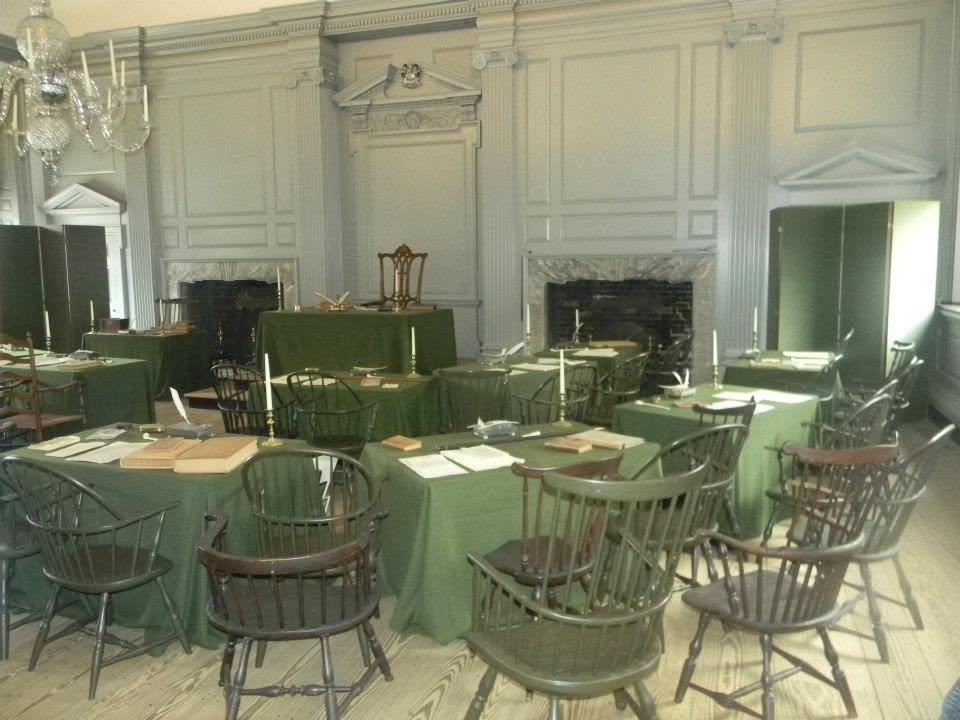
And saving it did not mean leaving it untouched.
The building changed over time. Restoration sometimes meant attempting to recover an earlier appearance, but the people doing the restoration were themselves products of a later era. Strickland's 1828 steeple, for example, generally followed the original design but incorporated a clock and additional ornamentation. Later restoration efforts altered other parts of the site as well. In the late nineteenth century, the city reconstructed wings and arcades around Independence Square to evoke the eighteenth-century appearance of the complex.4
More than a century later, the tower itself became a reminder that preservation is never finished. During a recent rehabilitation, National Park Service specialists uncovered and evaluated portions of the 1828 structural framing, repaired deteriorated masonry and wood, and worked to retain historic material wherever possible. The project was not an attempt to make the tower new. It was an attempt to ensure that an old structure could continue carrying its history forward.
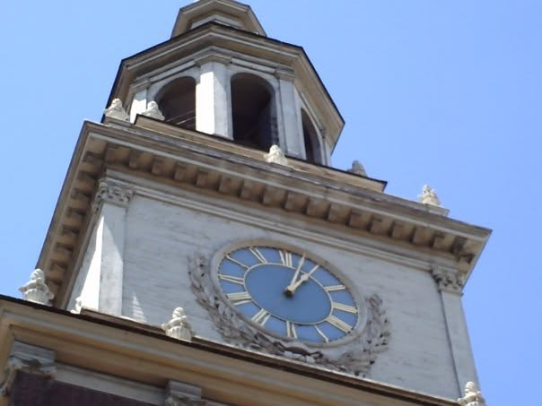
In other words, even one of America's most carefully preserved buildings is not a perfect time capsule.
The lesson is particularly visible today. Independence Hall has continued to require major preservation work, including recent renovations undertaken as Philadelphia prepared for the nation's 250th anniversary. When the building reopened, the work was largely invisible to the visitor—and that is part of the point. Successful preservation often means making interventions carefully enough that the public can continue experiencing the historic place without constantly being reminded that someone is working to keep it standing.
It is a surviving historic structure that has been maintained, repaired, restored, reconstructed and interpreted by successive generations.
That distinction becomes particularly important when we step inside the Assembly Room. The room where the Declaration of Independence and Constitution were debated and signed did not remain visually frozen after 1787. By the nineteenth century, it had undergone substantial changes. Modern preservationists eventually undertook extensive research involving historians, architects, archaeologists, craftspeople and conservators to determine how the room could be restored toward its historic appearance. The National Park Service describes that work as establishing standards that continue to influence historic preservation.
So when we stand inside Independence Hall today, we are experiencing something more complicated than an eighteenth-century room.
We are experiencing the eighteenth century as preserved by the twentieth and twenty-first centuries.
That does not make the experience false. It makes the preservation itself part of the history.
The same thing is true of the Liberty Bell.
When the bell was cast in 1753, nobody called it the Liberty Bell. It was the State House Bell, ordered by Pennsylvania's colonial assembly and installed in the tower of what we now call Independence Hall. Its primary purpose was practical: it called legislators to work and helped summon the public. Its famous inscription—“Proclaim Liberty Throughout All the Land Unto All the Inhabitants thereof”—was there from the beginning, but the bell's modern symbolic meaning developed much later.6
The transformation from useful object to national symbol is itself a fascinating preservation story.
The bell developed a crack sometime in the early nineteenth century and was repaired in 1846. That repair failed, and the bell was never successfully returned to service. By then, however, its physical usefulness was becoming less important than what people believed it represented. Abolitionists in the 1830s had begun using the bell's inscription as a symbol of their campaign against slavery, and the name “Liberty Bell” gradually took hold. Later generations of suffragists and civil rights activists also adopted the bell and Independence Hall as symbols in their own struggles for equality and liberty. 6
The irony is worth noticing. The bell became more historically important after it stopped functioning as a bell.Its value was no longer primarily mechanical. It had become symbolic.
And that symbolism was not fixed forever. Different generations found different meanings in the same object. Abolitionists saw the contradiction between the promise of liberty and the existence of slavery. Women's suffrage advocates invoked the same language in their campaign for political rights. Civil rights activists used Independence Hall and the Liberty Bell as national stages from which to challenge the country to live up to its own ideals.6
This is where preservation becomes more complicated than simply keeping an old building standing or an old object intact.
Preservation gives us the physical evidence. Interpretation gives that evidence meaning.
The National Park Service now preserves Independence Hall as part of Independence National Historical Park, created by Congress in 1948, and UNESCO recognizes Independence Hall as a World Heritage Site. Its preservation involves continuing maintenance, rehabilitation, security, environmental protection and management of enormous numbers of visitors. The Liberty Bell has likewise moved through different locations and forms of display as preservationists have balanced public access with the need to protect a fragile historic object. None of this diminishes what we see. It actually makes the experience more remarkable. 456
The building survived because people decided it mattered. The bell survived even after its original function disappeared. Both have been repaired, moved, interpreted and reinterpreted. Their survival allows us to encounter physical evidence from the founding era, but it also allows every generation to ask what those surviving objects and places mean.
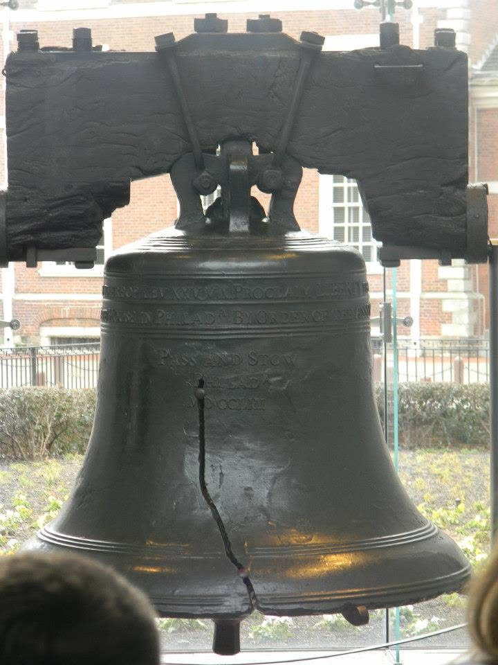
And that brings us to an important distinction for everything that follows. Preserving history does not preserve a single interpretation of history. The stone can survive. The bell can survive. The documents can survive. But the story we tell about them is something each generation must construct from evidence.
That means preservation is only the beginning. The harder question is what we do with what we have preserved—and who gets to decide what it means.
Franklin's Grave
Not far from Independence Hall, the scale of preservation changes dramatically.
There is no grand monument marking Benjamin Franklin's final resting place. There is no towering statue, elaborate mausoleum, or imposing architectural memorial. At Christ Church Burial Ground, Franklin's grave is marked by a simple marble tablet, shared with his wife, Deborah. Franklin died in 1790, and the family plot also contains the remains of their children, Francis and Sarah. What survives is modest compared with the enormous historical reputation of the man buried there. And perhaps that is precisely what makes the site so interesting as a preservation case.
Franklin's connection to Christ Church and Philadelphia was deep and longstanding. He was born in Boston, but Philadelphia became the city with which his public life would ultimately be associated. He worshipped at Christ Church, helped establish institutions throughout the city, and became one of Philadelphia's most recognizable citizens. His burial place therefore became part of the physical landscape through which later generations encountered his memory. The significance of the site was no longer simply that a particular man had been buried there. It was that the city had preserved a tangible place connected to one of the people who had helped shape it.
That significance has only grown with time.
Franklin's grave is now visited by people who come not simply to pay their respects to a deceased individual, but to connect themselves to the history of Philadelphia and the founding of the United States. The marker is small. The historical shadow surrounding it is enormous. Standing there, a visitor is not looking at the place where the Declaration was signed or where the Constitution was debated. Instead, the visitor is standing at a place where the physical distance between the present and a particular historical person has been reduced to a few feet of ground and a piece of marble. 7
That is a different kind of preservation.
At Independence Hall, we preserve a building because of the extraordinary events that happened inside it. With the Liberty Bell, we preserve an object whose meaning expanded far beyond its original function. At Franklin's grave, we are preserving something more intimate: a physical connection between a person and the memory of that person.
And even that simple connection requires work.
The marble tablet deteriorated over time, including a significant crack that threatened its structural integrity. In 2016, the Christ Church Preservation Trust undertook conservation work on the marker and other portions of the Franklin family plot. The project raised $76,000 and included repairing the crack and addressing damage to the marble surface.7
Some of that damage came from an unusual tradition.
Visitors have long tossed pennies onto Franklin's grave, a reference to the saying most commonly associated with him: “A penny saved is a penny earned.” The gesture is meant as affection, but the accumulated impact of thousands of coins contributed to the deterioration of the marble itself.7
There is something almost poetic about that problem.
People were damaging the physical evidence of Franklin's life because they wanted to honor Franklin.
That illustrates one of the contradictions at the heart of preservation. The public's desire to interact with history is one of the reasons we preserve historic places in the first place. Yet that same interaction can threaten the physical evidence we are trying to protect. A visitor who leaves a penny is expressing a connection to Franklin. A thousand visitors doing the same thing can help destroy the very marker that allows future visitors to make that connection.
Preservation therefore requires more than good intentions. It requires recognizing that even a place we deeply value is vulnerable to the attention that gives it meaning.
And Franklin's grave raises an even larger question about whose history survives.
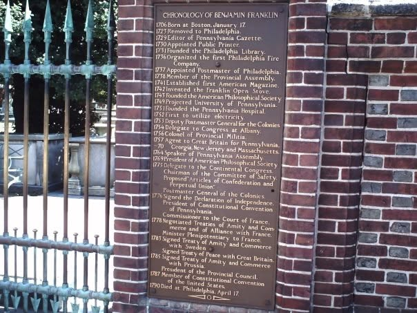
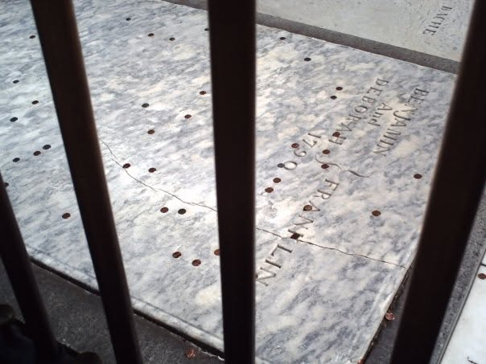
Christ Church Burial Ground contains roughly 1,400 surviving markers, while thousands of other markers have disappeared through erosion, deterioration, alteration, or the simple passage of time. Franklin's marker survived in part because Franklin became one of the most famous Americans in history and because later generations continued to recognize the importance of the place. But the people buried around him did not necessarily receive the same attention.
Preservation can protect evidence, but preservation also depends upon choices. Some places receive extraordinary resources because their historical importance is widely recognized. Others receive less attention because their stories are less familiar, their physical remains less impressive, or the people associated with them never became famous. Over time, the result can be that the physical landscape of history begins to reflect not only what happened, but also what later generations decided was worth remembering.
That does not make Franklin's grave unworthy of preservation. Quite the opposite. It gives us another reason to preserve it. The grave is valuable not only because Benjamin Franklin is buried there, but because it allows us to examine how societies construct memory in the first place.
And perhaps that is the most interesting thing about the site.
The past does not require a monumental building to remain meaningful. Sometimes preservation means keeping a magnificent structure standing. Sometimes it means protecting an artifact that has become a national symbol. And sometimes it means repairing a small piece of marble so that someone two hundred years from now can still stand in the same place and know that this person was here.
But there is another problem. A grave can survive even when much of the story surrounding a person becomes distant or forgotten. A building can disappear while the evidence of what happened there remains buried beneath the ground. And sometimes, the physical thing we most want to understand is simply no longer there.
That brings us to the President's House.
The President’s House
Independence Hall and Franklin's grave show us two very different ways history can survive. In one case, an entire historic building has been maintained across generations; in the other, a simple marker preserves a physical connection to a person whose historical significance has grown enormously over time. But preservation becomes a very different problem when the thing itself does not survive. What happens when the place is gone, but the history attached to it is too important to ignore? Philadelphia's next example makes that question even more complicated, because here the problem is not simply the loss of a building. It is the challenge of deciding how to preserve and interpret a history that includes both national achievement and profound human suffering.
The site at Sixth and Market Streets was once home to the executive mansion of the early United States. George Washington lived there during his Philadelphia presidency from 1790 to 1797, and John Adams followed him from 1797 until 1800, when the federal government moved to Washington, D.C. The building was therefore the closest thing the new republic had to a national presidential residence before the White House became the permanent seat of the presidency.8
But the history of the building cannot be separated from another fact: the people who lived and worked there included enslaved people. Washington brought enslaved members of his household to Philadelphia, and they lived and worked within the presidential household while the nation's new government was taking shape. Their presence was not an incidental detail added to the story later. It was part of the history of the building itself.8
And yet the building did not survive.
Rediscovering What Had Been Lost
After the federal government left Philadelphia, the property changed hands and the structures around it changed with the city. The President's House was eventually demolished, and later development erased much of the physical evidence of the building. For generations, the place where Washington and Adams had lived survived primarily in documents, maps, memories, and historical records. 8
Then the building was found again.
In 2002, historian Edward Lawler Jr. published research identifying the precise location of the lost President's House at Sixth and Market Streets. His work established that the presidential residence stood directly beside what would eventually become the Liberty Bell Center.8
Five years later, archaeology put that research to the test.
Excavations at the site in 2007 uncovered portions of the original eighteenth-century structure, including foundation walls, the curved bow window added during Washington's residence, a root cellar associated with the kitchen and washhouse, and an underground passage connecting the kitchen to the main house. Some of the most important discoveries were spaces that had never appeared in the surviving historical records. 8
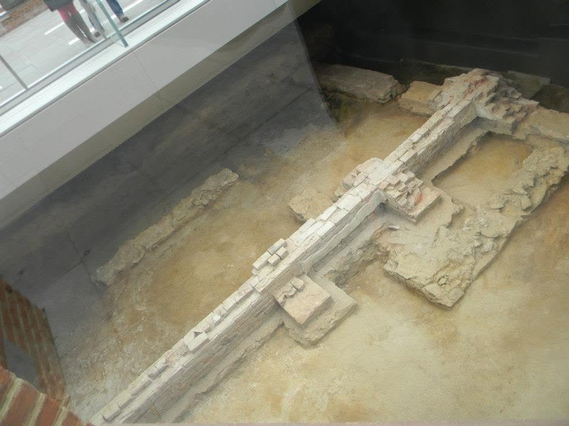
The documents could tell historians that Washington lived there. The archaeology could begin to show how the people who lived and worked there actually experienced the place. The kitchen, cellar, passageway, and other service areas revealed the physical spaces occupied by servants, including the enslaved people whose labor helped make the presidential household function. 8
And suddenly, a building that had disappeared was no longer entirely gone.
For generations, however, there was little visible indication that the site had once been the center of the nation's executive government. The history existed in documents, maps, archaeological evidence, and the stories historians had reconstructed from them. The physical landscape was largely silent.8
Then Philadelphia began preparing to commemorate the nation's 200th anniversary.
The decision to build a new Liberty Bell Center on the site brought an old question back into the public consciousness: what should Philadelphia do with the place where the President's House had once stood?
The answer eventually became a compromise between archaeology, architecture, public memory, and interpretation. Rather than attempt to reconstruct Washington's presidential residence as though the original building still existed, Philadelphia created an open-air memorial that marks the footprint of the house and allows visitors to encounter the site without pretending that the building survived. 8
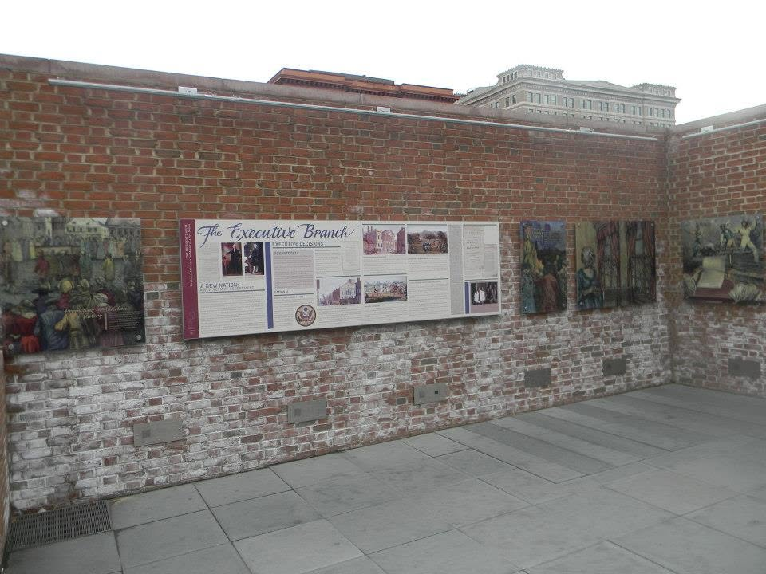
But this time, there was another issue that could not be avoided.
If the site was going to tell the story of the President's House, whose story would it tell?
For a long time, the most obvious story was the one the name itself suggested: Washington, Adams, the presidency, the birth of the federal government, and the creation of the American republic. Those stories belong there. They are historically important, and the site would be incomplete without them.
But the site was also the place where enslaved people lived and worked while the first presidency was being established.
That created a preservation problem very different from the one we encountered at Franklin Court. At Franklin Court, the challenge was how to represent a building that no longer existed. At the President's House, the challenge became how to represent a history that had long been told incompletely.
The question was no longer simply, What can we preserve? It became:
What do we owe the people whose history is part of this place, even when that history is difficult to tell?
That question eventually shaped the site's interpretation. The memorial incorporated the story of slavery into the history of the President's House rather than treating it as a separate subject. The lives of the enslaved people who worked there became part of the physical and interpretive landscape, alongside the story of the presidents who occupied the building.8
Preservation is sometimes described as if the objective were simply to recover the past exactly as it was. But we have already seen that this is impossible. At Ticonderoga, surviving buildings had to be reconstructed and interpreted. At Franklin Court, a vanished house had to be represented through archaeology and a deliberate acknowledgment of what was missing. At the President's House, the physical structure was gone and the historical record itself demanded a broader interpretation.
The past doesn't come to us untouched. We encounter it through the choices made by the people who preserve it.
That is why the President's House became such a revealing example of preservation in Philadelphia. The site demonstrates that deciding what to preserve is only the beginning. Once we decide that a place matters, we also have to decide what story visitors will encounter when they arrive.
And those decisions can become controversial.
The President's House memorial eventually became the subject of renewed debate over how its exhibits presented slavery and the relationship between slavery, George Washington, and the early American presidency. In 2025 and 2026, changes to the site's interpretive panels became part of a much larger national argument over how museums and historic sites should present difficult chapters of American history.
That brings us to a question that neither Ticonderoga nor Franklin Court quite forced us to confront:
What happens when preservation itself becomes political?
The Smithsonian: Preserving the Things
By now, we have looked at preservation from several different angles. Fort Ticonderoga showed us what it takes to maintain a historic place over generations. Independence Hall showed us that even a building that survives must continually be repaired, studied, and cared for. The Liberty Bell showed us how an object can outlive its original purpose and acquire new meaning. Franklin's grave showed us that preservation can be as simple as protecting a physical connection between a person and the memory of that person. The President's House took the problem in another direction: sometimes the building disappears, leaving archaeology and historical evidence to tell us what was once there.
The Smithsonian takes all of those problems and makes them vastly larger.
The Smithsonian is not primarily preserving one building, one battlefield, or even one category of history. Its collections encompass objects and specimens representing American history, art, science, technology, culture, and the natural world. The institution currently describes its collections as approaching 157 million objects, distributed among its museums, research centers, libraries, the National Zoo, storage facilities, and other locations. Only a small percentage of those holdings can be displayed at any given time.31
That last point is easy to overlook.
When we walk through a museum, we tend to think of the objects we see as the collection. They are not. They are a selection from the collection.
Behind the galleries are enormous amounts of material that most visitors will never see. The Smithsonian's Museum Support Center in Suitland, Maryland, for example, provides more than a million square feet of collections storage and houses tens of millions of collection items. The facility contains storage areas, laboratories, offices, and conservation facilities designed not simply to hide objects from public view, but to provide controlled environments in which they can be preserved and studied.
That changes the way we should think about a museum.
The exhibition is only the visible end of a much larger preservation system.
An artifact may spend most of its life in storage rather than behind glass. It may be examined by a researcher, photographed, cataloged, conserved, digitized, loaned to another institution, or brought out for an exhibition years after it was acquired. Some objects may never become famous enough to appear in a gallery at all. They can nevertheless remain valuable because they provide evidence that researchers may need decades from now.
This is one of the most important differences between the Smithsonian and the historic sites we have visited so far.
At Ticonderoga, the place itself is the central artifact. At Independence Hall, the building is the evidence. At the President's House, the archaeological remains help recover evidence of something that no longer exists. At the Smithsonian, the evidence is the collection itself. And preserving that evidence requires a remarkable amount of discipline.
The Smithsonian's own collections policy makes clear that acquiring an object is not simply a matter of deciding that something looks historically interesting. Potential acquisitions are evaluated according to factors including the institution's mission, the item's significance and condition, its documentation and provenance, its potential use for research, education or exhibition, and the Smithsonian's ability and cost to provide appropriate storage, conservation, preservation, digitization, and access. The institution therefore acquires only a small percentage of the material offered to it.
That may be one of the least visible acts of preservation.
Sometimes preserving history means deciding not to collect something.
Every object that enters a collection creates a responsibility. Someone has to document it. Someone has to store it. Someone has to protect it from deterioration. Someone has to make sure future researchers can locate and understand it. If it is placed on exhibition, additional conservation and security requirements arise. If it is digitized, that requires another set of resources. Preservation therefore begins before the object ever reaches a display case.
And once it is there, preservation does not simply mean putting it somewhere safe and walking away.
The Smithsonian's preservation policies emphasize environmental controls, appropriate storage and handling, emergency planning, conservation, and the continuing assessment of risks to collections. Its Museum Conservation Institute uses scientific research and specialized conservation techniques to examine, document, and preserve cultural heritage. The goal is not simply to make an object look good for today's visitor. It is to extend the object's useful life so that it can remain available to researchers and future generations.
A conservator may sometimes repair an object so that it can be exhibited, but conservation can also mean stabilizing an object that the public will never see. An archivist may create a digital copy not because the original is unimportant, but because providing access to the copy can reduce the amount of handling the original receives. Digitization can therefore serve two purposes at once: it can make history more accessible while helping protect the physical evidence itself.
And now we arrive at another important difference. At a historic site, the public generally comes to the history. At the Smithsonian, the history can come to the public.
An object can be preserved in Maryland, studied by a researcher in Washington, digitized by a Smithsonian program, and examined by someone thousands of miles away. The Smithsonian's collections search system alone provides access to millions of records and millions of pieces of online media.
That is preservation serving a purpose beyond simply keeping something alive. It is preserving access to knowledge. But there is an unavoidable consequence of operating at this scale. Someone has to decide what is collected. Someone has to decide what is conserved first. Someone has to decide what can be exhibited. Someone has to decide what belongs in a particular gallery, what belongs in storage, and what belongs in the digital collection. And someone has to decide how an object is described when the public encounters it.12
That is where our preservation story begins to change.
At Ticonderoga, we asked how a historic place could be saved. At Franklin Court, we asked what could be done when the original building was gone. At Independence Hall, we saw that preserving a surviving building requires continual choices about restoration and authenticity. At the Smithsonian, those choices multiply across millions of objects.
Preservation has become curation.
And curation inevitably involves judgment. That does not mean that judgment is inherently political. It does not mean that every decision about what goes into a museum exhibit represents an attempt to manipulate history. Museums could not function without selection. A gallery cannot contain every artifact, and a label cannot explain every possible interpretation of an object.
But once we recognize that an institution is selecting, organizing, conserving, and presenting evidence, we have to ask a more difficult question:
Who gets to make those decisions, and what standards should govern them?
That is where the Smithsonian takes us next. Because preserving history is one responsibility. Deciding how the public encounters that preserved history is another.
And once government begins asking questions about those decisions, we enter a very different preservation problem—one that is no longer simply about whether history should be protected, but about who has the legitimate authority to oversee the people protecting and interpreting it.
Preservation, Politics & Trump: Oversight vs. Overreach
Oversight Is Legitimate
Once we understand how the Smithsonian works, the political controversy surrounding it becomes more complicated than a simple argument about whether museums should be “political.” The Smithsonian is a public institution in an unusual sense. It was created by Congress, operates under a Board of Regents connected to all three branches of the federal government, receives substantial federal appropriations, and holds collections that belong to the public trust. The Regents are responsible for major questions involving the institution's finances, collections, exhibitions, education programs, and administration. Government oversight is therefore not an intrusion into a completely private institution. It is part of the structure Congress created. 13 14 15
That makes an important principle clear: the Smithsonian is not entitled to immunity from scrutiny simply because it is a museum. If taxpayers provide funding, government has a legitimate interest in how that money is spent. If an institution holds public collections, it has a responsibility to care for them. If an exhibit contains factual errors, those errors should be corrected. If an institution's management is failing, its governing body has a responsibility to intervene. Oversight can be a safeguard for preservation rather than a threat to it.
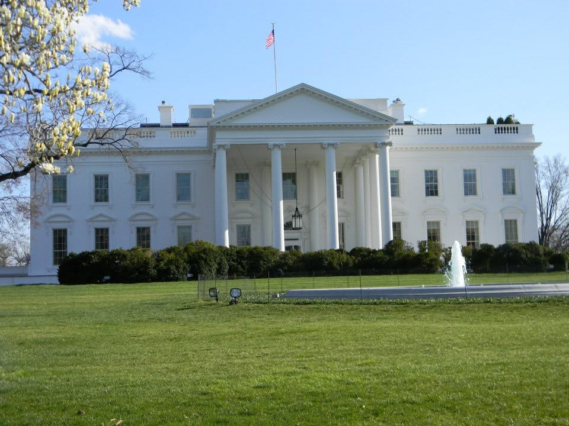
The Administration's Case
The harder question is what happens when oversight moves beyond the institution's finances, management, and legal obligations and begins reaching into the interpretation of history itself. That question became impossible to ignore during Donald Trump's second presidency.
On March 27, 2025, Trump issued Executive Order 14253, Restoring Truth and Sanity to American History. The order directed Vice President JD Vance, who serves on the Smithsonian Board of Regents, to work toward removing what the administration described as “improper ideology” from the Smithsonian's museums, research and education centers, and National Zoo. It also called for future Smithsonian appropriations to prohibit funding for exhibits or programs that the administration considered degrading to shared American values or dividing Americans by race, and directed the administration to work with Congress concerning appointments to the Board of Regents. The same executive order directed the Interior Department to restore federal parks, monuments, memorials, and other properties that the administration believed had been improperly altered to “perpetuate a false revision of history.”18
Even the title of the order tells us something about the dispute. Restoring Truth and Sanity to American History does not describe a neutral administrative review. It begins with a conclusion: that American history has become insufficiently truthful and sufficiently unsound that the federal government must intervene to correct it. That framing deserves scrutiny, particularly because many of the administration's complaints about historical and cultural institutions overlap with President Trump's longstanding belief that he himself has been unfairly portrayed by the institutions that document and interpret American life.
That does not, by itself, invalidate the administration's complaints. Trump may be correct about particular exhibits, labels, or interpretations. And some of the administration's broader criticisms deserve to be considered on their merits.
But a politics publication should acknowledge the political context rather than pretending it isn't there. The person exercising the power has a stake in the historical narrative being examined. That does not prove improper interference. It does, however, make the question of where legitimate oversight ends and political control begins considerably more important.
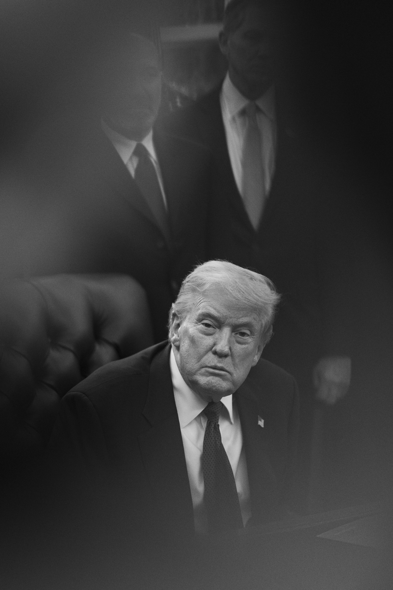
Before we move from the administration's stated rationale to the actions it has taken, however, we should apply a consistency test. Would we accept the same exercise of government power if the political circumstances were reversed?
That question matters because the principle should not depend on whether we agree with the president exercising the power. If a Democratic president claimed that federally supported museums were presenting American history through an ideological lens and ordered changes to their exhibits, would we defend that authority? If the answer is no, we should be careful about defending the same authority simply because we agree with President Trump's conclusions. And if we would defend the authority in the hypothetical Democratic administration, we should be prepared to defend the same authority here.
The point is not to force a predetermined answer. It is to make sure that our standard remains the same regardless of who occupies the White House.
That distinction also complicates the administration's argument about monuments. If the goal is to preserve history, removing a monument from a courthouse lawn does not necessarily erase the history represented by that monument. The statue can be preserved in a museum, archive, battlefield, cemetery, or other appropriate historical setting where its existence can be studied and its meaning explained. Conversely, restoring a monument to government property is not automatically an act of historical preservation. It can also be an act of governmental commemoration.
And this is where, having considered the evidence presented so far, I believe questioning the administration's motives is not only reasonable but responsible. The administration has taken a strong position on restoring monuments and memorials while simultaneously challenging the way museums present some of the most difficult chapters of American history, particularly the history of slavery, race, and their consequences. Those actions may each have legitimate explanations standing on their own.
But President Trump has himself articulated a different principle. In 2020, while defending monuments, he was asked whether slavery should be taught in schools. His answer was unequivocal: “I want people to know everything they can about our history.” He added, “If you don't study the bad, it could happen again.”38
That is a principle worth taking seriously. If the bad parts of American history should be studied precisely so that we can learn from them, then it is fair to ask what happens when the government decides that an institution is emphasizing those parts too much.
Asking that question does not require us to dismiss the administration's stated concerns. In fact, we have an obligation to take those concerns seriously. But responsible political analysis requires us to examine not only what government says it is doing, but the pattern of what it is doing and the interests implicated by that pattern.
The question, then, is not simply whether a monument was removed or restored. What exactly is being preserved, who is doing the preserving, where is it being preserved, and what is the government saying by doing it?
One of the stated principles in the founding of Higher Ideals was the testing of consistency—not only in politics, but in history and in the ordinary decisions of American life. We cannot apply that principle selectively. If the political circumstances were reversed, would this administration and its supporters defend the same exercise of governmental authority? Or would they object to it because a different president, pursuing a different interpretation of American history, was exercising the power?
That is not a rhetorical question. It is the consistency test we have asked throughout this publication, and we are obligated to apply it here—even when doing so may challenge the position we might otherwise be inclined to support.
Government Recognition ≠ Private Belief
There is, however, an important distinction we need to make before going further: government deciding what it displays is not the same thing as government deciding what private citizens are permitted to display.
That distinction becomes especially important when we talk about controversial historical symbols. If a Confederate monument stands on government property, the government has made a decision to use public property to commemorate or honor the person or cause represented by that monument. A decision to remove it can therefore be understood as a decision about government recognition. It does not necessarily mean that the government is declaring the monument historically irrelevant, nor does it necessarily mean that private citizens should be prohibited from possessing or displaying the same symbol.
Those are separate questions. A government can decide that it will no longer honor a particular figure on public property while still recognizing that the figure and the monument are historically significant. It can preserve the object somewhere else, place it in a museum, document it, or explain why it was created and why it was later removed. Preserving the evidence of a symbol is not the same thing as requiring government to continue endorsing the symbol.
The distinction also works in the opposite direction. A government choosing to keep a controversial monument on public property is not simply preserving history. It is making a decision about what the government itself is willing to commemorate. That may be defensible, but it is different from saying that private citizens must be permitted—or forbidden—to display the same symbol.
The question of what government should officially honor is therefore different from the question of what citizens should be free to believe, possess, display, or criticize. Confusing those two questions would take us from the government's own speech into the regulation of private speech, and that is a considerably different exercise of governmental power.
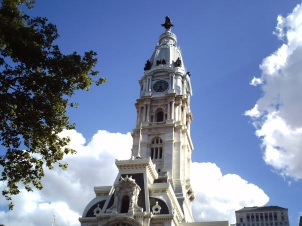
The distinction becomes clearer when we consider how we treat symbols that carry very different histories. The Union Jack, for example, is an important part of the history of the American Revolution. It represents the government from which the colonies declared their independence and the political system against which the Revolution was fought. Yet we would not expect the British flag of 1776 to fly over an American government building today simply because it is historically significant. Its historical importance does not create an obligation for the present government to display it as an official symbol.
The Confederate flag presents a more difficult question because it is both a historical artifact and a symbol that became associated with slavery, secession, and white supremacy. A government can therefore reasonably decide that it does not want the Confederate flag flying over a government building or displayed as an official symbol of the United States. That decision does not require us to deny the flag's historical importance, nor does it necessarily require us to prevent a museum from displaying it or a private citizen from possessing it.
The same principle helps explain an even more extreme example. A Nazi flag is undeniably an important historical artifact. A museum may need to display one in order to explain the history of Nazi Germany, the Holocaust, or the Second World War. But no reasonable understanding of historical preservation requires the United States government to fly a Nazi flag over a federal building. Historical significance does not automatically make a symbol appropriate as an expression of government.
These examples demonstrate why the question cannot simply be whether a symbol is historically significant or offensive. Government has to make choices about the symbols it uses to represent itself. It can decide that the Union Jack, the Confederate flag, or the Nazi flag does not belong on a government building without claiming that those symbols should disappear from history or that citizens should be prohibited from encountering them.
That distinction becomes especially important with symbols that are widely regarded as symbols of hatred. We may reasonably believe that government should not use such symbols to represent the American people while still recognizing that the government does not automatically acquire the authority to prohibit every private use of them. What government chooses to say about itself is one question. What Americans are permitted to say is another.
That distinction brings us to the more difficult question of individual freedom. Should symbols that have become widely accepted as symbols of hatred ever be illegal for a private citizen to display? It is an uncomfortable question precisely because the symbols involved can represent ideas that most Americans find abhorrent. But freedom of speech is most meaningful when it protects expression we find objectionable, not merely expression we already approve of.
A private citizen displaying a Confederate flag, a Nazi flag, or another deeply offensive symbol is not necessarily asking the government to endorse that symbol. The citizen is exercising individual expression. The government, by contrast, speaks when it chooses what to display on its own buildings, grounds, monuments, and official ceremonies. And while an individual speaks for just themselves, the government speaks for everyone. The two acts may involve the same physical symbol while representing fundamentally different exercises of power.
That does not mean every use of every symbol must be protected in every circumstance. Context matters, and conduct involving a symbol can raise entirely separate legal questions. But we should be extremely cautious about creating a principle in which government may prohibit expression simply because a symbol has become sufficiently offensive or hateful. Once government acquires the authority to decide which ideas are too repugnant to display, the question becomes who gets to decide what qualifies—and whether that power remains acceptable when political control changes hands.
This is another place where our consistency test matters. We may be comfortable with government restricting a symbol we consider hateful today. But would we be equally comfortable if a future administration used the same authority against a symbol we believe represents something honorable, patriotic, or historically important? The protection of individual expression cannot depend upon whether we approve of the expression being protected.
At the same time, protecting private speech does not require government to provide a platform for that speech. I may have the right to display a symbol on my own property without having the right to demand that the government display it on a government building. My freedom of speech does not create a government obligation to adopt my message as its own.
That gives us a principle that can survive the political reversal we have been testing throughout this section: government should have considerable authority to decide what it officially represents, but considerably less authority to decide what its citizens are permitted to represent for themselves.
The Museum Problem
The difficulty is that museums occupy a much more complicated space between those two ideas. A museum may be publicly supported, publicly accountable, and housed within an institution connected to government while still serving a fundamentally different purpose from a government building flying a flag. Its job is not simply to tell Americans what the government believes. Its job is to preserve evidence, conduct research, educate the public, and help visitors understand the past.
And that is where the distinction between government speech and historical interpretation becomes much harder to draw.
Museums can be publicly funded and publicly accountable without existing simply to express the government's preferred view of history. Their purpose is different from that of a government building displaying a flag. They exist to collect, preserve, research, interpret, and educate. They may display symbols, artifacts, documents, and images that the government itself would never choose to use as official symbols precisely because understanding those things is part of understanding the past. Just as displaying the flag without endorsing the Confederacy, just as it can display a Nazi flag without endorsing Nazism. The object is being presented as evidence. Its presence in the exhibit does not necessarily represent the institution's approval of what it represents. In fact, removing historically significant objects simply because they represent ideas we find offensive could make it more difficult for museums to fulfill their educational purpose.
But the same principle creates an important distinction on the other side. A museum does not have unlimited authority simply because it is engaged in education. Its exhibits can be criticized. Its scholarship can be challenged. Its interpretations can be questioned, and when public money is involved, the institution can and should be held accountable for how that money is used. Public accountability is not the same thing as political control, however.
The government therefore has a legitimate interest in asking whether a publicly supported museum is fulfilling its mission, using public resources responsibly, and presenting historical evidence honestly. What becomes more difficult is when the government moves beyond asking those questions and begins deciding which interpretation of the evidence the public should ultimately receive.
That is the line we now have to examine. There is a difference between government saying, “Show us the evidence, explain your methodology, account for the public money, and correct demonstrably false claims,” and government saying, “We disagree with the interpretation, therefore change what you display.” The first is oversight. The second begins to look much more like control over historical interpretation.
The distinction matters because it does not require us to reject the administration's concerns before we examine them. Quite the opposite: if the administration believes that publicly supported institutions have presented American history inaccurately or ideologically, that claim deserves to be examined on its merits. The question is whether the remedy remains within legitimate oversight or crosses into control over the institution's interpretation of history.
That being understood, the Trump administration's stated rationale deserves to be taken seriously before criticizing it. Trump argued that American cultural institutions had increasingly presented the country through what he regarded as a distorted, excessively negative, or ideological framework. His administration's position was that public institutions should celebrate American achievement rather than teach Americans to be ashamed of their country. In its own language, the administration wanted museums to emphasize American history, innovation, achievement, and shared national identity.
There is a legitimate argument buried inside that position.
A national museum should not be an activist organization masquerading as a museum. Curators should be able to explain the evidence behind their interpretations. Exhibits should distinguish historical fact from interpretation. Museums receiving public money should be accountable to the public. And there is nothing inherently improper about elected officials asking difficult questions about whether publicly supported institutions are fulfilling their missions.
In fact, asking those questions is part of democratic government. The problem is that history cannot be made accurate simply by making it more positive.
The President's House Comes Back
We have actually encountered this question already, at the President's House in Philadelphia. That controversy deserves to be brought back into the discussion because it gives us something the Smithsonian dispute alone cannot: a concrete example of the administration's approach to a historic site and its interpretation.
The President's House is an especially revealing case because there is no question that slavery was part of the history of the site. George Washington lived there as president while enslaved people served him. The archaeological remains of the building helped recover a physical place that had disappeared, and the resulting memorial was deliberately designed to tell two histories at once: the history of the first presidential residence and the history of the people Washington enslaved there.
That was never a neutral interpretive choice. Neither is any museum exhibit. Someone has to decide what visitors see, what they read first, what receives the most space, which voices are included, and what historical questions are placed in the foreground. That is the unavoidable work of interpretation.
The controversy began when the Trump administration challenged the way the President's House presented that history. The administration's position was not simply that the site should be maintained differently or that a particular historical fact was inaccurate. The dispute centered on how the history of slavery and Washington's relationship to it should be presented to the public.
That distinction is important.
There is a legitimate argument that a historic site devoted to the presidency should not reduce Washington's Philadelphia residence to a story primarily about slavery. Washington was president of the United States. He lived at the site. He governed from there. The building is part of the story of the creation of the federal government. An interpretation that gives insufficient attention to those facts would also be incomplete.
But there is an equally legitimate reason the history of slavery belongs there. The people Washington enslaved were not incidental to the household. Their labor made the household function. Their presence was part of the physical and social reality of the presidential residence. Removing or minimizing that history does not make it disappear; it changes what visitors understand the place to have been.
That is precisely why the President's House became such an important test case.
The question was no longer simply, What happened here? We already knew much of that. The question became, Which parts of what happened here should the government emphasize when it tells the public the story?
And that is where the administration's broader argument becomes more complicated.
The administration could reasonably argue that federal historic sites should not become vehicles for contemporary political messaging. It could argue that exhibits should emphasize historical evidence rather than present-day ideological judgments. It could argue that Washington's accomplishments, the creation of the presidency, and the founding of the federal government deserve to be given their proper place alongside the history of slavery. Those are arguments worth hearing.
But once the government begins determining that an interpretation is unacceptable because it gives too much prominence to one part of the historical record, we have entered a different category of dispute. The government is no longer merely protecting the building, preserving the archaeology, funding the site, or requiring factual accuracy. It is making a judgment about the balance of the story itself.
That is the line we need to watch.
The President's House therefore gives us our first example of the tension between preservation and interpretation. The building disappeared. Archaeology recovered evidence of it. Preservation transformed that evidence into a public place of memory. And then politics entered the picture and raised a difficult question: once the government is responsible for preserving the site, does that responsibility also give it the authority to decide how the history recovered from that site should be interpreted?
There is no easy answer. The federal government owns and administers historic places for a reason. Taxpayers support them. Congress establishes their missions. Presidents appoint officials who oversee federal agencies. Government cannot simply be excluded from decisions concerning public historical institutions. 13 14 15
But neither should government oversight be confused with ownership of the historical narrative.
That distinction becomes even more important because the President's House was not the administration's only dispute with a historical institution. It established a pattern we need to keep in mind as we turn to the Smithsonian. In both cases, the administration was concerned not merely with whether history was being preserved, but with whether the history being presented to the public was the right history—and whether the institution presenting it was emphasizing the right things.
That does not prove that the administration has crossed the line into political control. But it means we can no longer treat the Smithsonian controversy as an isolated disagreement over museum management. We now have a second case against which to measure the administration's actions.
The President's House asks the question at the scale of one historic site. The Smithsonian asks it at the scale of the nation's largest network of museums and research institutions.
If the government can intervene in the interpretation of one historic site because it believes that site's story has been told incorrectly, what principle limits that authority when the institution involved is responsible for telling the story of America itself?
The Smithsonian: A National Test
The President's House is not the only example that makes this question worth asking. The administration has also challenged the interpretation and presentation of history at the Smithsonian's National Museum of African American History and Culture. That dispute is particularly significant because the museum's subject is not some peripheral chapter of American history. It deals directly with slavery, emancipation, segregation, civil rights, race, and the continuing consequences of those events.
The administration's objections deserve to be heard here as well. If a federally supported museum presents American history in a way that the administration believes emphasizes racial division, contemporary political ideology, or an interpretation unsupported by the historical record, the administration has every right to challenge that presentation. A museum should not be immune from criticism simply because its subject matter is politically sensitive.
But the accumulating examples also make the larger question harder to dismiss. We are no longer talking about a single disagreement over one exhibit at one historic site. We have an administration repeatedly questioning the way federally supported institutions present difficult parts of American history—and, in some cases, seeking changes to those presentations.
That does not prove that every intervention is improper. It does, however, establish a pattern that makes the question of oversight versus control impossible to ignore.
Furthermore, the argument that “we pay for it, therefore the government should always have a say in what it does” is too simple. The federal government funds institutions whose independence exists for a reason: some functions of government are better able to serve the public when their professional judgment is given some distance from direct political control. Independence does not mean those institutions are unaccountable. It means that accountability and political direction are not necessarily the same thing.
That principle deserves consideration when we talk about museums and historical institutions. A museum's purpose is to serve the public by preserving evidence, conducting research, educating visitors, and presenting history as accurately and honestly as its professional standards allow. If some degree of independence helps other publicly funded institutions better serve the public, why should we automatically assume that museums serve the public better when their interpretation can be directly reshaped by whoever happens to control the government?
The answer may be that they should not. Perhaps historical interpretation, like other areas of public service, benefits from having professionals make professional judgments while remaining subject to legitimate oversight and accountability.
That does not make curators infallible. It does not mean museums should be immune from criticism. And it certainly does not mean taxpayers should have no voice. It means that serving the public and serving the political leadership of the moment are not necessarily the same thing.
Paying the bill does not necessarily mean owning the story.
The United States has a remarkable history. It also has a complicated one. The same nation that declared that all men are created equal permitted slavery to continue. The same constitutional system that created representative government excluded women from voting and left millions of people outside the political community. The country expanded across a continent while displacing Indigenous peoples. It fought a civil war that killed hundreds of thousands of Americans. It abolished slavery and then permitted a century of legally enforced racial segregation. It expanded democratic participation while repeatedly arguing over who was entitled to participate.
None of those facts make the American story illegitimate. They are the American story.
And this brings us back to the purpose of preservation. We preserve the evidence precisely because we do not know what future generations will need to understand about the past. If we preserve only the parts of history that make us proud, we are no longer preserving history. We are preserving a preferred memory of history.
That distinction became particularly important when the administration moved from general criticism to a formal review of Smithsonian exhibitions.
In August 2025, the White House informed the Smithsonian that it would conduct a comprehensive review of selected museums and exhibitions. The review was explicitly concerned with exhibition text, wall labels, educational materials, websites, digital content, curatorial processes, upcoming exhibitions, and the Smithsonian's plans for the nation's 250th anniversary. The administration said the purpose was to remove “divisive or partisan narratives” and ensure historically accurate and constructive presentations of American history. 37
That is a much more consequential form of oversight.
The government was no longer simply asking, “Are you spending the money properly?” It was asking questions about how the institution interprets the evidence and how that interpretation is presented to visitors. This is where George Orwell's warning in 1984 becomes relevant: ‘Who controls the past controls the future: who controls the present controls the past.”
Orwell was writing about something far more extreme than a dispute between a president and a museum. His point, however, remains useful: political power becomes especially consequential when it gains the ability to determine which version of the past the public is permitted to encounter. A government does not have to invent history from scratch to influence how history is understood. It can change the labels, remove the exhibits, redirect the emphasis, or decide which interpretation receives official institutional support.
That is why the question before us is not whether the Trump administration is entitled to criticize museums. Of course it is. What we should ask is whether that authority to criticize what these museums display also gives the administration the authority to dictate what they display. The question is more difficult: when does legitimate criticism become governmental control over historical interpretation?
Who Gets to Tell the Story?
There is still a legitimate oversight argument here. The Smithsonian is not a collection of completely independent private museums. Its Board of Regents already exercises authority over exhibitions and education programs. The institution's leadership has a responsibility to ensure that exhibitions meet professional standards. And government officials can reasonably ask whether those standards are being applied consistently.
But now the boundary becomes much harder to see.
Consider what a museum curator actually does. A curator does not simply place an object in a glass case and attach its date. Someone has to determine why the object matters, what evidence surrounds it, what other objects should appear beside it, which historical events provide context, and what questions the visitor should consider. Every exhibit therefore involves choices.
Some of those choices will inevitably be controversial.
A museum about American history that discusses slavery is not necessarily anti-American. A museum that discusses discrimination is not necessarily condemning the country. A museum that presents the experiences of women, Indigenous Americans, immigrants, African Americans, or other groups is not necessarily replacing traditional American history. Sometimes it is simply adding evidence that earlier generations of museums neglected.
But the reverse is also true. Adding a previously neglected perspective does not automatically make an interpretation correct. Museums can overstate arguments, select evidence selectively, or allow contemporary political assumptions to shape historical interpretation. Professional expertise is not a substitute for intellectual honesty.
That is why the proper standard cannot simply be whether an exhibit makes visitors feel proud or uncomfortable.
The standard has to be evidence.
The Case for Caution
That principle was tested again in July 2025 when the Smithsonian removed a temporary placard concerning presidential impeachment from an exhibit at the National Museum of American History. Reports initially raised questions about whether the administration had influenced the decision. The Smithsonian responded that no administration official had asked for the placard's removal and said the temporary addition failed its own standards for appearance, placement, timeline, and presentation. The institution said the impeachment section would subsequently be updated to cover all presidential impeachment proceedings.17
That episode is instructive precisely because it demonstrates why we should be cautious about assuming political interference every time a museum changes an exhibit.
Sometimes a museum changes an exhibit because the museum made a museum decision.
That distinction matters.
If every alteration is automatically attributed to political pressure, legitimate institutional judgment becomes impossible to distinguish from political intervention. But the opposite mistake is equally dangerous: assuming that political pressure cannot exist simply because an institution claims that its decisions are independent.
When the Stakes Changed
By 2026, the dispute had moved considerably further.
On July 4, 2026—the 250th anniversary of the Declaration of Independence—the White House released a report titled Saving America's Story. The report accused the National Museum of American History of presenting American history through an ideological framework and argued that the museum had failed to present the country as a shared national inheritance. The administration's conclusion was not simply that particular labels or exhibits needed improvement. It questioned whether the museum's leadership could be trusted to present American history accurately and called for changes to the institution's approach.
The Smithsonian rejected that characterization. Secretary Lonnie Bunch argued that the White House report unfairly characterized the museum's mission, while National Museum of American History director Anthea Hartig defended the institution's approach as an effort to broaden the historical record rather than erase traditional American stories. The American Historical Association likewise defended the Smithsonian, arguing that historical scholarship should be based on evidence rather than a government-mandated celebratory narrative.21
Then came another step.
On July 24, 2026, Trump issued Executive Order 14416, Restoring Trust in the Smithsonian Institution. The order relied on the White House report and directed the Interior Department, through the National Park Service, to install temporary signage on public walkways outside the National Museum of American History. Those signs are intended to inform visitors of the administration's findings and to direct them toward what the administration considers ‘accurate information’ about American history. The order also calls for temporary exhibits or signage addressing what it considers inaccurate information in the museum.20
The Irish Times reports that the administration has struggled to directly change Smithsonian exhibits and that the ordered signage represents an attempt to bring its preferred historical account into the physical space immediately outside the museum. It also reports that the exhibits criticized by the White House remained unchanged when journalists visited this week (week of 8/9/2026). The Smithsonian's internal exhibits remain under the institution's control, while the administration is using federal authority over surrounding public space to present its own competing historical account. 22 23 24 25
As of August 2026, the significance of that order is becoming clearer. The administration has not simply taken control of the Smithsonian's galleries; the museum's own exhibits remain under the institution's authority. Instead, the federal government is using its control of the surrounding National Park Service property to place its own historical message directly in the path of museum visitors. The question is no longer merely whether the government may criticize a public institution. It is whether government authority over public space and public funding can be used to establish an official corrective narrative alongside an institution whose historical interpretation the administration disputes. 20 22 23 24 25
In other words, does the government possess the legal authority to protest an institution in the same way an individual might?
There is an irony here. A government possesses powers that an individual does not, yet using those powers to stage what amounts to a competing protest can make the government appear less like a governing authority and more like another participant in the argument. If government has the authority to enforce the law, why does it need to behave like a protester?
From Oversight to Intervention
This is where the distinction between oversight and overreach becomes much harder to dismiss as an abstract philosophical question.
The government unquestionably has oversight responsibilities. Congress funds the Smithsonian. The Board of Regents governs it. Federal officials have legitimate responsibilities concerning federal property, appropriations, and compliance with law. 13 14 15
But there is a profound difference between saying:
Show us how you are spending public money.
and saying:We disagree with your interpretation of American history, so we will tell the public that your museum is wrong.
The first is ordinary democratic accountability. The second raises a constitutional and institutional question about who gets to determine historical truth.
And there is an irony here that should not be missed.
We have spent this entire journey arguing that preservation matters because the physical evidence of the past allows future generations to examine history for themselves. We praised archaeological research at the President's House because it allowed historians to recover evidence that had been lost. We praised Ticonderoga's preservation because the surviving fabric of the fort allows us to encounter the past rather than merely read someone else's description of it. We praised the preservation of Independence Hall because the building itself gives us something that a textbook cannot.
The point of preserving evidence is to give people the opportunity to examine it.
That means preservation necessarily requires interpretation. A museum has to explain what an object is and why it matters. But interpretation should remain distinguishable from the evidence itself.
A government can legitimately insist that a public institution preserve its collections, maintain professional standards, correct factual errors, account for its money, and remain accessible to the public. It becomes much more troubling when the government attempts to determine in advance which interpretation of contested history is sufficiently patriotic to be acceptable.
When Oversight Becomes Control
Up to this point, we have drawn a distinction between legitimate government oversight and something more troubling. That distinction matters because government unquestionably has a role in the institutions we have been discussing. Universities that receive public money can be investigated for discrimination. Museums that receive public support can be questioned about how they spend that money and whether they are fulfilling their missions. Public schools can establish curriculum and determine what is age-appropriate for their students. None of that is inherently improper.
The harder question is what happens when the government uses legitimate authority over one aspect of an institution as leverage to influence matters beyond that authority.
The Trump administration's treatment of universities provides another useful example. The administration has legitimate authority to investigate allegations of antisemitism and discrimination, and universities should not be exempt from civil-rights law simply because they are universities. But the administration's demands have gone considerably further than investigating individual violations. In its confrontation with Harvard, for example, the administration demanded sweeping changes involving governance, admissions, hiring, diversity programs, and viewpoint diversity, while using billions of dollars in federal funding as leverage. Harvard rejected those demands as exceeding the government's lawful authority and argued that no government should dictate what a private university teaches or which areas of inquiry it pursues.34
That does not mean every demand made against Harvard was improper. It means the scope of the government's intervention matters. A government can say, “You may not discriminate against students because of their religion.” That is enforcement of a law. It is something quite different to say, “Your institution is insufficiently viewpoint diverse, your academic programs must be restructured, and your compliance must satisfy the federal government.” At that point, the government is no longer simply policing the boundary established by law. It is beginning to influence what an educational institution looks like and, potentially, what kinds of ideas it is expected to present.
Columbia offers an important complication—and an important warning. The administration's eventual agreement with the university preserved significant areas of academic autonomy. That matters, and we should acknowledge it. But the fact that an agreement ultimately protected academic decision-making does not erase the significance of the pressure that preceded it. The government was willing to use its enormous financial and regulatory leverage to seek institutional changes from a private university. What government ultimately obtained is not necessarily the same thing as what it was willing to demand. 35
And this is not only a federal problem.
Florida provides a useful example at the state level. The state unquestionably has authority over its public-school system. It has a legitimate interest in determining what children are taught and in allowing parents to challenge material they believe is inappropriate. But Florida's experience demonstrates how quickly that authority can become something more. The state has repeatedly used its authority over public-school instruction and library materials to restrict what students can encounter, producing thousands of removals and restrictions in recent years. Those challenges have included books dealing with race, racism, LGBTQ+ experiences, sexuality, and other controversial subjects.36
The important question is not whether every one of those books belongs in every school library. Reasonable people can disagree about age appropriateness, curriculum, and the educational value of particular books. The question is why a book is removed. If a school removes a book because it is genuinely inappropriate for the age group or because it fails legitimate curricular standards, that is an exercise of educational judgment. If a book is removed because officials object to the ideas, experiences, history, or perspective contained within it, the nature of the government's action changes. Courts have already been asked to consider that distinction in challenges to Florida's policies, including whether government officials may remove materials because they disagree with the viewpoints those materials express.36
The examples are not identical, and we should not pretend that they are. A university, a national museum, a historic site, and a public-school library operate under different laws and serve different purposes. But they share a question that is impossible to ignore:
Who gets to decide what Americans are allowed to learn—and why?
That second question matters as much as the first.
There are legitimate questions about whether universities are fulfilling their responsibilities, whether museums are presenting history accurately, whether public money is being used properly, and whether students are being exposed to material appropriate for their age. We should not dismiss those concerns simply because they come from an administration with which we disagree.
But government action does not exist in a vacuum. Patterns matter.
President Trump has repeatedly described unfavorable reporting about himself as “fake news” or otherwise illegitimate when he characterizes reporting as false, unfair, or politically motivated. That does not prove that his administration's approach to American history operates according to the same logic. But it is relevant when considered alongside an administration that has increasingly challenged institutions for presenting accounts of America that it considers too negative, divisive, or ideologically distorted.
There is also a tension between the president's current approach and his own earlier words about history. In 2015, Trump said the Confederate flag displayed at South Carolina's statehouse should probably come down and suggested putting it in a museum. Two years later, after Charlottesville, he took a sharply different position, defending Confederate monuments as “beautiful” and arguing that removing them was “ripping apart” American history and culture. He followed that with the declaration that “you can't change history, but you can learn from it.” 39 40
That same Charlottesville episode also complicates the president's claim to be simply defending history. His defense of Confederate monuments came in the same controversy in which he said there were “very fine people, on both sides,” a statement that remains one of the most consequential and disputed comments of his presidency. Whatever one makes of the president's broader record on race, the episode matters here because the monuments at its center were not merely pieces of stone or metal. They represented a contested part of America's racial history—and the president chose to frame their removal as an attack on American history and culture.
Placed alongside the administration's actions involving the President's House, the Smithsonian, the National Museum of African American History and Culture, universities, and the teaching of American history, the episode becomes part of a larger pattern that makes the administration's approach to America's racial history—and its stated reasons for reshaping how that history is presented—reasonable subjects of scrutiny.
Today, his administration has gone further still, directing federal agencies to review and restore monuments and historical markers that were removed or altered in recent years. That evolution does not, by itself, prove an improper motive. But it does make the president's own words about learning from history particularly relevant to the question we are asking now. If the history is worth preserving because we are supposed to learn from it, then that principle should apply to the uncomfortable parts of America's racial history as well—not only to the monuments and stories we choose to preserve.
The same pattern appears in different forms. A university is criticized for its institutional culture and academic programs. A museum is criticized for how it presents American history. A historical site is subjected to scrutiny over how its past is interpreted. A public-school system restricts what students can encounter. None of these examples, by itself, establishes improper motive.
Taken together, however, they give a reasonable person grounds to ask whether something larger is happening.
The question is no longer simply whether the administration has legitimate reasons to exercise oversight. It is whether those reasons are being applied consistently—or whether institutions and interpretations are being pressured when they present aspects of America that the administration, or the president himself, finds politically or personally unfavorable.
That is a different question, and it is one we should be willing to ask plainly.
Because if the government's objective is genuinely to improve historical accuracy, then uncomfortable history should be welcomed alongside celebratory history. If the objective is genuinely to protect students, then the standard should be age appropriateness rather than ideological preference. If the objective is genuinely to ensure accountability, then the same standards should apply regardless of whether an institution's interpretation makes those in power happy or unhappy.
A government committed to those principles should be able to tolerate a history that does not flatter it.
There is nothing wrong with telling Americans that their country has accomplished extraordinary things. There is nothing wrong with celebrating progress, sacrifice, innovation, democratic achievement, or the ideals that have made the American experiment worth preserving. But celebrating those things does not require hiding the parts of our history that make us uncomfortable.
In fact, the more honest and meaningful story is often the opposite: Yes, America did terrible things. Yes, those things caused terrible suffering. We should understand them, acknowledge them, and remember them. But look how far we have come—and look how much further we still have to go.
That is not an anti-American story. It is a story of a country capable of confronting its own failures and learning from them.
And that brings us back to the argument President Trump himself articulated during the controversy over Confederate monuments in 2017:
“You can't change history, but you can learn from it.”
That is an idea worth defending.
Because if government acquires the authority to decide which parts of our history are sufficiently positive, sufficiently patriotic, or sufficiently acceptable to be taught and displayed, the problem is no longer merely government interference in education or preservation.
It is the government exercising power over the story itself.
And censorship does not necessarily require a government official to stand in front of a classroom and announce that a particular idea is forbidden. It can take the form of removing a book, threatening an institution's funding, demanding that an exhibit be changed, pressuring an educational institution to alter its programs, or creating rules that encourage teachers and curators to avoid subjects likely to provoke government disapproval.
That does not mean every government decision to remove a book, change an exhibit, or condition funding is censorship. Government has legitimate authority over its own property, its own programs, and the expenditure of public money. It can enforce laws. It can protect children. It can demand accountability. It can even disagree publicly with the institutions it funds.
The line is crossed when disagreement becomes control—when government moves from asking whether an institution has fulfilled its responsibilities to determining which history, interpretation, or perspective is acceptable for the public to receive.
At that point, “government overreach” may be too mild a description. We may be talking about censorship.
The Consistency Test
There is another reason to be cautious.
Political power changes hands.
The interpretation that one administration considers sufficiently patriotic may be considered partisan by the next. If Republicans establish the principle that a president may reshape museum narratives whenever the president believes the museum has presented an unacceptable interpretation of history, Democrats will eventually inherit that same authority. The institutional question therefore cannot be answered simply by asking whether we agree with the current president's conclusions.
We have to ask whether we want any president to possess that power.
That is the real test.
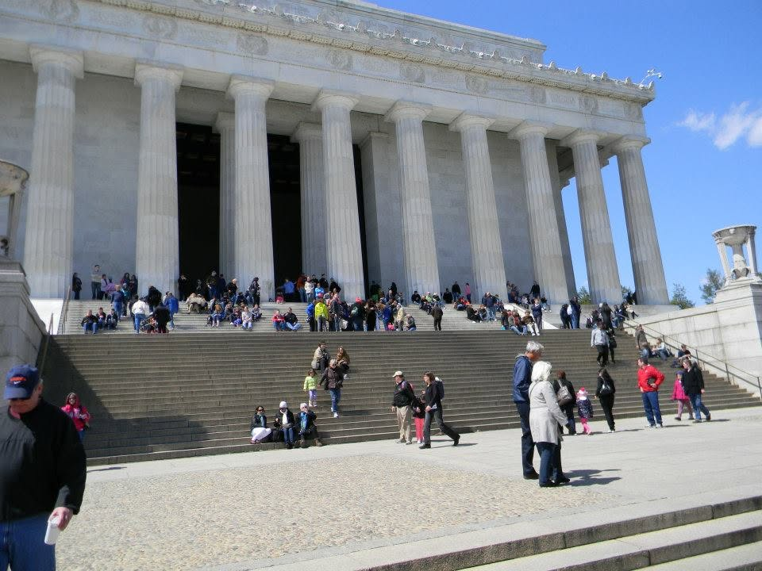
And it brings us back to the difference between preservation and propaganda. Preservation protects evidence so that it can survive. Scholarship examines that evidence. Museums interpret it and make it accessible. Democracy then gives citizens the freedom to encounter the evidence, disagree about its meaning, and argue about what it teaches us.
None of those functions requires history to be anti-American.
But neither does loving America require us to hide the parts of its history that are difficult to love.
A mature nation should be capable of doing both: celebrating what it accomplished and honestly confronting where it failed. In fact, the ability to do both may be one of the clearest signs of national confidence.
That leaves us with a line worth defending.
Government oversight is necessary. Museums should be accountable. Curators should be challenged. Historical interpretations should be scrutinized. Public institutions should never be permitted to treat their professional status as a shield against legitimate criticism.
But the answer to a disputed historical interpretation should ordinarily be more evidence, better scholarship, greater transparency, and public debate—not political control over the story.
If the evidence shows that the Trump administration has crossed that line, we should say so plainly. Not because Trump is Trump, and not because museums are automatically right, but because the principle matters regardless of who occupies the White House.
The danger of political overreach in preservation is not merely that one administration might tell the wrong story.
It is that it might establish the precedent that the government gets to decide which version of the past Americans are allowed to encounter. And if preservation has taught us anything, it is that once something is erased, altered, or lost, getting it back is rarely easy.
Which brings us to the question we have been building toward all along:
What Do We Get Back?
What Do We Get Back?
The point of preserving a place like the President's House is not simply to recover bricks, foundations, or the outline of a vanished building. What we recover is the opportunity to ask better questions about the people who lived there, the people who worked there, and the society that surrounded them. The physical remains give history something that documents alone cannot always provide: a place.
That place gives us evidence. A document can tell us that George Washington lived at Sixth and Market Streets. A map can tell us where the house stood. A letter can tell us what someone thought about an event. Archaeology can tell us something different. It can show us where rooms were located, how spaces were connected, what survived beneath the ground, and what kinds of activities took place there.
At the President's House, excavations uncovered foundation walls, the bow window associated with Washington's residence, a root cellar, and an underground passageway. Those discoveries did not replace the written record. They added another layer to it.
That additional layer matters because history is rarely as complete as we would like to believe. The people who left behind the most documents are not necessarily the people whose lives were most important, and the things that were considered ordinary at the time are often the very things that disappear from the historical record. Archaeology can sometimes recover those missing pieces. A kitchen, a cellar, a work area, or a passageway may not seem as historically important as a president's office, but those spaces can tell us about the people who maintained a household, prepared its food, carried its supplies, cleaned its rooms, and performed the work that allowed the people upstairs to live as they did.
That is particularly important at the President's House because the physical remains help us confront a part of the story that can easily become secondary when we focus only on the presidency. George Washington and John Adams lived there as presidents of a new nation. Washington's household also included enslaved people whose labor was essential to the operation of the residence. The archaeological evidence helped make those less visible parts of the household part of the physical story of the site. Preservation did not merely give us a better picture of the president. It gave us a better opportunity to understand everyone who was part of the place.
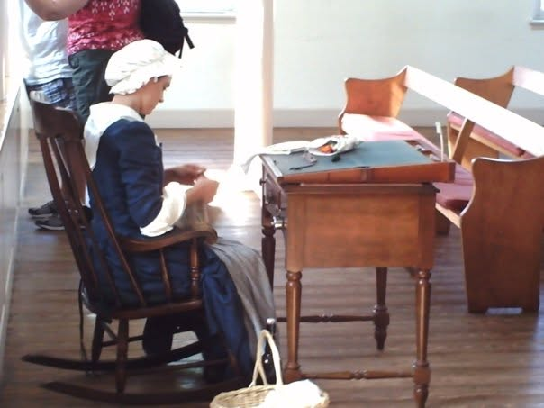
And that brings us to another thing we get from preservation: education.
A preserved site is a classroom, but it does not require a desk, a textbook, or even a prior knowledge of the subject. Someone can walk onto the site knowing almost nothing about the President's House and begin learning simply by seeing what remains, reading the interpretation, asking questions, and realizing that the ground beneath their feet once contained a building that played a role in the earliest years of the American republic.
That kind of education is different from memorizing a date or a name. It encourages us to connect information to a physical reality. We aren't simply told that Washington lived in Philadelphia. We can stand where his house once stood. We aren't simply told that enslaved people lived and worked there. We can learn about the spaces in which that work occurred. We aren't simply told that the building disappeared. We can see the evidence of what survived and understand that its survival was not inevitable.
Preservation also allows us to question the story.
That may be one of its greatest educational benefits. When we encounter history only through a finished narrative, it can seem settled. A preserved place reminds us that history is evidence-based and that our understanding of the past can change when new evidence is discovered. The President's House itself demonstrates this. For generations, the building was gone from the landscape. Then archival research identified its location, archaeology uncovered physical remains, and those discoveries changed what could be said about the site.
The story did not become less certain because new evidence appeared.
It became richer.
That is what we should want from historic preservation. Not a perfectly polished version of the past, and not a monument designed to make us feel good about ourselves, but a physical record that allows us to keep learning. Sometimes that record confirms what we already know. Sometimes it complicates it. Sometimes it forces us to confront something that previous generations overlooked or chose not to emphasize.
And there is something else we get back: connection.
A historic site gives us a chance to experience history as something that happened to real people in real places rather than as an abstract sequence of events. The people who occupied these spaces did not know they were living inside a future history lesson. They were simply living their lives—making decisions, doing their work, raising families, pursuing ambitions, dealing with conflicts, and responding to circumstances they could not predict.
Standing in the places they occupied does not transport us into their world. But it can make that world easier to imagine and, perhaps more importantly, easier to take seriously.
That is why preservation is about more than saving old buildings.
We preserve places because places preserve questions.
They give us evidence to examine, stories to reconsider, and opportunities to teach people who were not alive when the events occurred. They allow each generation to encounter the past for itself rather than receiving it entirely secondhand.
And when the physical building is gone, as it is at the President's House, even fragments can matter. A foundation, a cellar, a passageway, or an archaeological artifact may seem small compared with the building that once stood above them. But those fragments can be enough to reconnect us with a world that would otherwise exist only in documents and memory.
The question, then, is not simply whether we can preserve everything.
We can't.
The more important question is what we choose to preserve, what we choose to remember, and what we are willing to learn from what survives.
Philadelphia: What Preservation Gives Back
We have talked about what preservation gives us in historical, educational, and civic terms. But there is another return that is considerably easier to measure: money.
Historic preservation is often discussed as though it were primarily a cultural expense. A city decides that a building, neighborhood, archaeological site, or landmark matters, and then someone has to find the money to protect it. That money pays for restoration, maintenance, research, interpretation, staffing, security, infrastructure, and the countless less visible expenses required to keep historic places open and accessible.
But preservation can also generate economic activity. People do not visit Philadelphia's historic sites in isolation. They stay in hotels, eat in restaurants, shop in local businesses, use transportation, visit other attractions, and sometimes extend their trips because the history of the city gives them a reason to come in the first place. The historic place may be the attraction, but the economic benefit spreads well beyond its boundaries.
Philadelphia provides unusually clear evidence of this relationship. Independence National Historical Park—which includes Independence Hall, the Liberty Bell, Franklin Court, and other historic sites—has repeatedly generated substantial economic activity in the surrounding community through visitor spending. In 2022, 2.7 million visitors to the park spent approximately $178 million in nearby communities, supporting roughly 2,400 local jobs and producing an estimated $282 million in cumulative economic benefit.
Those dollars do not simply disappear into the preservation budget. They move through the local economy. Visitors need places to sleep. They need food. They buy goods, use transportation, visit other attractions, and spend money on experiences that would not necessarily occur if the historic sites were not there. The National Park Service's national visitor-spending analysis reflects the same pattern: in 2024, visitors to National Park Service sites generated $56.3 billion in total economic output, supporting an estimated 340,100 jobs nationwide. Lodging and restaurants were among the largest beneficiaries.
Philadelphia's historic places therefore function as more than repositories of the past. They are economic assets. Independence Hall and the Liberty Bell help attract visitors to Philadelphia; those visitors then participate in an economy that includes businesses and workers who may have nothing directly to do with preservation itself.
The effect is not limited to tourism, either. Preservation can involve construction, specialized trades, architecture, engineering, archaeology, conservation, and other professional work. Rehabilitating an old building can put people to work just as constructing a new one can. In some circumstances, preservation can also return an underused building to productive use rather than leaving it vacant or demolishing it and starting over.
The federal Historic Tax Credit provides one of the clearest national examples of this phenomenon. The program encourages private owners to rehabilitate historic income-producing properties while maintaining their historic character. In fiscal year 2024 alone, projects using the federal incentive generated an estimated $12.8 billion in economic output, supported approximately 116,000 jobs, contributed $6.6 billion to GDP, and generated an estimated $1.8 billion in taxes. Since the program began in 1976, it has leveraged hundreds of billions of dollars in private rehabilitation investment.
That matters because it complicates the assumption that preservation is necessarily money taken out of the economy and locked into the past. Sometimes preservation is itself an economic investment. A building that might otherwise sit vacant can become housing, offices, retail space, a hotel, a restaurant, or another productive use. The historic character can become part of the reason people want to visit, live, work, or invest there.
Philadelphia's own experience reflects that broader pattern. The city's preservation activity has been associated with tourism, property values, construction activity, employment, and broader economic development. The city has also explicitly recognized that preserving and retrofitting existing buildings can foster skilled-trade employment, encourage neighborhood investment, contribute to tourism, and support local businesses.
None of this means that every historic building is an economic winner. It means something more modest—and more important. The economic value of preservation is real, measurable, and often much larger than the cost of the preservation project itself would suggest.
But that is only half of the economic question.
If preservation creates economic value, who pays for it? Who receives that value? And what happens to the money, land, development, housing, or other opportunities that might have existed if preservation had not been chosen?
What Does Preservation Cost?
The first answer is obvious: someone has to pay.
Preservation requires money long after the ribbon-cutting ceremony. Historic buildings need roofs repaired, masonry stabilized, windows maintained, mechanical systems upgraded, and interiors protected. Archaeological sites need monitoring and conservation. Collections require storage, insurance, cataloging, security, and professional care. Exhibits have to be staffed, maintained, updated, and eventually replaced. Even a site that appears simple to the visitor can represent years of continuing financial obligations.
Some of that money comes from visitors. Some comes from private owners, nonprofit organizations, foundations, donors, and businesses. Some comes from local, state, or federal governments. And sometimes the public contributes indirectly through tax credits, grants, subsidies, or tax expenditures that reduce the government's eventual revenue. The funding mechanism changes, but the underlying question does not: what resources are being committed to preservation, and what else could those resources have accomplished?
That is the opportunity cost of preservation. A dollar spent stabilizing a historic building cannot simultaneously be spent repairing a road. A tax credit granted to rehabilitate a historic property represents revenue the government has chosen not to collect. A parcel preserved as a historic site cannot necessarily be redeveloped for whatever use the market might otherwise have supported. A preservation requirement can protect the character of a neighborhood while also limiting what a property owner can build, alter, or replace.
None of those facts proves that preservation is a bad investment. They simply mean that preservation is an investment, and investments have alternatives.
This becomes especially complicated in a city like Philadelphia, where historic preservation exists alongside very real and sometimes competing needs. The city has to think about housing, infrastructure, commercial development, neighborhood investment, accessibility, public safety, environmental requirements, and the preservation of historic buildings at the same time. A building cannot be evaluated only according to its age or historical significance when the property around it is part of a living city with people who need places to live and businesses that need places to operate.
The conflict is not always dramatic. Sometimes the choice is not between saving Independence Hall and building a highway through it. More often, it is between preserving an older building and renovating it in a way that makes it economically viable; between maintaining historic character and allowing additional housing; between keeping an existing structure intact and replacing it with something that may serve a contemporary need better; or between spending limited public money on preservation and spending it on another public priority.
Those are not necessarily arguments against preservation. They are arguments for taking the costs of preservation seriously.
There is also a distributional question that is easy to overlook: who pays and who benefits?
A historic district may increase surrounding property values, which can benefit property owners and investors. Tourism can generate revenue for hotels, restaurants, retailers, transportation providers, and other businesses. A restored building can create jobs and bring an otherwise underused property back into productive use. Those are legitimate public and private benefits.
But the people receiving those benefits are not always the same people paying the costs. A taxpayer may help finance a preservation program without owning property in the district. A homeowner may see the value of a property rise while also facing restrictions on what can be changed. A small business may benefit from increased tourism while another business may struggle with the costs of complying with preservation requirements. A neighborhood may become more desirable while becoming less affordable for some of the people who already live there.
That does not make the economic benefits illegitimate. It makes the distribution of those benefits part of the preservation question.
The same principle applies to tax incentives. Historic tax credits can encourage private investment that might otherwise never occur, turning neglected properties into productive ones and generating jobs, construction activity, and tax revenue. But a tax credit is still a public policy choice. The government is effectively deciding that encouraging this particular form of private investment is worth more than collecting the revenue that would otherwise be owed.
That choice can be justified. But it should be evaluated honestly. The economic activity generated by a preservation incentive is not the same thing as the cost of the incentive, and neither number tells the entire story by itself.
There is another complication. Economic impact studies often measure the activity generated by preservation, but measuring activity is not the same as measuring the net economic benefit of preservation. A visitor who spends money at a historic site is contributing to the local economy, but some of that spending might have occurred elsewhere in the city if the historic site did not exist. A construction project creates jobs, but the workers and materials involved might have been employed on another project. A preserved building may increase property values, but that increase can produce benefits for some owners while increasing costs for others.
These distinctions do not erase the economic case for preservation. They make the case more credible by forcing us to ask what the numbers actually measure.
And there is a final cost that is harder to calculate: the cost of saying no to something else.
Every city has limited land, limited money, limited political attention, and limited capacity to maintain what it already owns. Preservation decisions therefore do not occur in a vacuum. Choosing to preserve one building may mean choosing not to build something else on that site. Choosing to maintain one historic property may mean postponing another project. Choosing to devote public resources to preservation may mean fewer resources for a competing need.
The uncomfortable truth is that sometimes those competing needs are legitimate too.
That is what makes preservation a question of judgment rather than a simple moral command. We cannot preserve everything. We cannot fund everything. And we cannot pretend that every historic property has the same claim on public resources.
The question is therefore not whether preservation has costs. It plainly does. The question is whether the historical, civic, educational, cultural, and economic value created by preservation is sufficient to justify those costs—and who should be asked to bear them.
Who Pays, and Who Benefits?
That last question may be the most important economic question of all. Preservation does not have a single payer, and it does not have a single beneficiary. The money can come from taxpayers, property owners, nonprofit organizations, private investors, donors, visitors, and businesses. The benefits can flow to many of those same groups, but not necessarily in equal measure or at the same time.
Consider the simplest example: tourism. A historic site can attract visitors who spend money in Philadelphia, but the visitor does not necessarily spend that money at the historic site itself. The hotel receives some of it. The restaurant receives some. The transportation company receives some. Retailers and other attractions receive some. The city and state may receive some through taxes. The preservation institution may receive admission fees, donations, or other revenue. The economic benefit of preservation therefore spreads outward from the site rather than returning neatly to the institution that maintains it.
That is one reason preservation can be economically valuable even when a particular historic site does not generate enough direct revenue to cover its own expenses. The question is not simply whether the admission receipts at a historic property equal the cost of operating it. The broader economic question is what activity the existence of that property helps generate.
Philadelphia's historic economy illustrates that distinction particularly well. The city's historic sites contribute to a tourism ecosystem that extends far beyond the boundaries of individual properties. Visitors come to encounter history, but while they are here they participate in a much larger network of businesses and services. Research on Philadelphia preservation has associated preservation activity with tourism, property values, construction activity, employment, and broader economic activity.
But the reverse is also true: the people who benefit economically from preservation are not necessarily the people who pay for it.
A taxpayer may help fund a historic site without ever visiting it. A property owner may pay to maintain a historic structure while tourists, neighboring businesses, or future property owners receive some of the conomic benefit. A nonprofit may raise private money to preserve a building whose surrounding neighborhood ultimately becomes more valuable. A federal or state tax incentive may encourage a private developer to rehabilitate a historic property, meaning the public gives up some potential tax revenue in the expectation that the resulting investment will generate greater economic activity.
That last example is particularly useful because it demonstrates that the public and private sides of preservation are not easily separated. Government does not necessarily have to write a check for preservation to subsidize it. Sometimes the subsidy takes the form of a tax credit, grant, favorable financing, regulatory decision, or other policy choice. The economic effect may still be substantial, but the cost is less visible than a line item in a government budget.
At the same time, private investment does not necessarily mean that the public receives no benefit. A privately financed rehabilitation can preserve a historic structure, create construction jobs, bring a vacant property back into use, increase surrounding economic activity, and eventually generate additional tax revenue. The federal Historic Tax Credit is built around precisely this relationship: public policy encourages private capital to undertake rehabilitation that might otherwise not occur.
The important question is therefore not whether preservation is public or private. It is how the costs and benefits move between the two.
There is another complication in Philadelphia: property values. Preservation can make neighborhoods more attractive, and historic character can itself become an economic asset. A well-preserved district can attract investment precisely because it offers something that a newly constructed development cannot easily reproduce. But rising property values are not an unqualified public good. The owner who sees an investment increase in value may welcome that change. A renter facing higher housing costs may experience it very differently.
This does not mean preservation caused every increase in property value, nor does it mean historic designation inevitably produces displacement or unaffordability. Those relationships are considerably more complicated than that. It does mean that economic success can create its own preservation dilemma. The same historical character that attracts investment can make a neighborhood more expensive to live in.
That tension forces us to ask a question that economic impact studies do not always answer: economic benefit for whom?
A visitor-spending number can tell us how much money moved through a region. It does not necessarily tell us how much remained in the local economy, who received it, what would have happened without the historic attraction, or whether the people who paid for the preservation received a proportionate share of the benefit. A jobs number tells us that employment was supported; it does not by itself tell us whether those jobs were permanent, what they paid, or whether the same employment would have existed through another form of investment.
This distinction matters because gross economic activity and net economic benefit are not the same thing. A large number can be real and still fail to answer the question we actually care about.
We can see the same problem when preservation becomes part of a larger economic strategy. Philadelphia can invest in its historic identity because history helps distinguish the city from other destinations. The city can market Independence Hall, the Liberty Bell, Franklin Court, historic neighborhoods, museums, and other sites as reasons to visit. That investment can pay dividends throughout the economy.
But once history becomes an economic asset, we should be careful about what happens next. Do we preserve a place because it has historical value and happens to generate economic activity, or do we increasingly judge its historical value by how much economic activity it generates?
Those are not the same principle.
The distinction matters because some of the most important historical places will never be major tourist attractions. Some will be difficult to access. Some will tell uncomfortable stories. Some may have little commercial potential at all. If profitability becomes the primary test for preservation, the historical record will inevitably tilt toward the places that can sell tickets, attract visitors, and increase property values.
That would be a mistake.
Economic value is evidence that preservation can produce a public return. It is not proof that every economically productive historic place deserves preservation, nor is a lack of economic productivity proof that a place does not.
The real value of this economic investigation is therefore not that it gives us a number with which to justify preservation. It gives us a better understanding of the tradeoff. Philadelphia spends resources preserving history, and history in turn produces economic activity that benefits the city. But the benefits are distributed unevenly, the costs are often distributed differently, and the relationship between investment and return is rarely as simple as a headline figure makes it appear.
Preservation can be an economic burden. It can be an economic investment. In some cases, it can be both at the same time.
And that is precisely why we need to look beyond Philadelphia.
Philadelphia in the National Context
Philadelphia is a useful place to study the economics of preservation because few American cities have such a concentrated collection of nationally significant historic places. But that can also make Philadelphia seem more unusual than it really is. The economic relationship between preservation and the communities surrounding preserved places exists across the country, although it takes different forms depending on the place, the institution, and the type of preservation involved.
The national evidence is particularly clear when we look at historic rehabilitation. The federal Historic Tax Credit has been used since 1976 to encourage private owners to rehabilitate historic income-producing buildings while retaining their historic character. This is not simply a program for maintaining museums or monuments. It applies to buildings that can return to productive economic use—housing, offices, hotels, retail, and other commercial purposes.
The results are substantial. According to the National Park Service and Rutgers University's Center for Urban Policy Research, historic rehabilitation projects using the federal credit generated $12.8 billion in economic output, $6.6 billion in gross domestic product, $4.8 billion in income, and approximately 116,000 jobs in fiscal year 2024 alone. Those projects represented $6.8 billion in rehabilitation investment.
The longer-term numbers are even more revealing. From the program's creation through fiscal year 2024, the federal Historic Tax Credit had helped leverage approximately $257.8 billion in private rehabilitation investment, associated with more than 50,000 historic properties and an estimated 3.4 million jobs. The federal government also reports that the program generated substantial tax revenue through the economic activity it encouraged.
Those numbers do not prove that every preservation project is economically worthwhile. They demonstrate something more limited but important: at a national scale, preservation can mobilize private investment and generate economic activity rather than simply consume public resources.
The distinction matters. When an abandoned historic building is rehabilitated and returned to productive use, preservation and development are not necessarily competing goals. In some cases, preservation becomes the means by which development occurs. An old building can become apartments. A former commercial structure can become a hotel. A vacant property can become a business or community space. The historic character is retained while the property reenters the economy.
The federal data also complicates the idea that preservation is primarily an urban luxury. The National Park Service reports that in fiscal year 2024, 74 percent of Historic Tax Credit projects were located in economically distressed areas, 41 percent were in low- and moderate-income census tracts, and 34 percent were in communities with populations below 50,000. Preservation investment therefore reaches places that do not resemble Philadelphia at all.
Tourism provides another national example, although here we have to be more careful about what the numbers tell us. The National Park Service reported that visitors to the national park system spent approximately $29 billion in communities near national parks in 2024, generating an estimated $56.3 billion in economic output nationwide and supporting approximately 340,100 jobs. Lodging and restaurants received some of the largest direct economic effects.
Those figures cannot be treated as a pure measure of historic preservation. The National Park System includes natural landscapes, recreational areas, battlefields, historic sites, cultural resources, and many combinations of those purposes. A visitor spending money near a national park may be there to hike, camp, see wildlife, visit a historic building, or do several of those things at once. The national park numbers therefore demonstrate the broader economic power of preserved public places, but they should not be presented as though every dollar represents the economic impact of historic preservation alone.
That distinction is important because this article is not trying to make preservation look more economically successful than it is. If anything, the opposite is true. The stronger argument is the one that admits what the numbers can and cannot prove.
What they can demonstrate is that preserved places can attract visitors, support surrounding businesses, create employment, stimulate investment, and sometimes transform properties that would otherwise remain vacant or underused. What they cannot demonstrate by themselves is that every preservation project produces a positive net return, that every visitor would otherwise have spent the same money somewhere else, or that the benefits are distributed equally among the people who pay for preservation.
Philadelphia therefore appears less like an exception and more like a particularly visible example of a national pattern. The scale varies enormously. A world-famous national landmark can attract millions of visitors. A rehabilitated Main Street building in a town of 20,000 may attract far fewer. A historic district may generate value gradually through dozens or hundreds of properties rather than through one major attraction. A battlefield or historic site may contribute to a regional tourism economy without generating enough direct revenue to cover its own operating costs.
The economic mechanism is nevertheless similar: preservation keeps something in existence that can generate forms of value that would disappear if the place disappeared entirely.
But the reverse remains true as well. The fact that preservation can generate economic activity does not eliminate the public cost. The Historic Tax Credit itself is a useful reminder. The federal government gives up tax revenue to encourage rehabilitation because policymakers believe the resulting private investment and economic activity justify that public expenditure. The program is therefore not evidence that preservation costs nothing. It is evidence that government has decided, in certain circumstances, that the expected return is worth the cost of the incentive.
That is a much more interesting national lesson than simply saying that preservation “creates jobs.” The real lesson is that preservation can be a form of economic policy. It can encourage private investment, sustain tourism, support local businesses, preserve property that might otherwise be abandoned, and create economic activity around places that already have historical value.
It suggests that the economics of preservation should be understood as a series of exchanges. Public money may encourage private investment. Private investment may preserve a historic resource. The preserved resource may attract residents, businesses, or visitors. Those people may generate tax revenue and economic activity. And some portion of that activity may, in turn, help sustain the community that made the original preservation decision.
But every exchange has a price.
A tax credit has a fiscal cost. A public historic site has an operating cost. A preservation requirement can affect what a property owner is allowed to do. A historic designation can change the economics of redevelopment. And a community that invests in preservation still has other needs competing for its limited resources.
The national evidence therefore strengthens the economic case for preservation without settling the larger argument. It tells us that preservation can produce substantial economic value. It does not tell us that economic value should be the only standard by which preservation is judged.
In fact, the national picture brings us back to the same question Philadelphia forced us to confront: what exactly are we measuring when we say that preservation “pays”?
Are we measuring money spent by visitors? Jobs created by rehabilitation? Tax revenue? Increased property values? Private investment that would not otherwise have occurred? The survival of a building that becomes economically productive again?
All of those things matter. But they measure different kinds of return.
And once we recognize that, the economic question becomes considerably harder—and considerably more useful.
What Actually Stays?
Economic impact numbers can be impressive. They can also be misleading if we forget what they actually measure.
When a historic site attracts visitors, the money those visitors spend is real. But the entire amount does not necessarily remain with the historic site, the neighborhood, or even the city. A visitor may spend money at a hotel owned by a national chain, eat at a restaurant whose profits leave the region, purchase goods from a company headquartered somewhere else, or use a transportation service whose economic benefits extend far beyond Philadelphia. Some of the money remains local. Some leaves. Some circulates through the economy several times before eventually leaving the region.
This is sometimes described as economic leakage, and it matters because the headline number for an economic impact study is generally a measure of activity rather than a check that can be deposited into a city's bank account.
Consider a visitor coming to Philadelphia specifically to see Independence Hall and the Liberty Bell. That visitor may spend hundreds of dollars during the trip. Some of that money supports local workers and businesses. Some becomes tax revenue. Some may help sustain the institutions and services that make the visit possible. But some of that money may ultimately flow to corporate headquarters, outside investors, suppliers, or other places entirely.
None of this makes the original economic activity meaningless. It simply means that “economic impact” and “local economic gain” are not interchangeable terms.
There is another question that is even more difficult: would the money have been spent anyway?
If a family travels to Philadelphia because it wants to see Independence Hall, preservation has clearly helped create the reason for the trip. But if that family was already coming to Philadelphia for a business conference, a sporting event, or another attraction and simply added Independence Hall to the itinerary, the economic effect of preservation is different. The historic site still matters. The visitor still spends money because the site exists. But it would be difficult to claim that every dollar spent during the entire trip was created by preservation.
This distinction becomes particularly important when cities host major events. Philadelphia's historic attractions can complement major events by giving visitors additional reasons to stay longer, spend more, and return in the future. But it would be difficult to attribute the entire economic impact of an event to the existence of the city's historic sites. Preservation can contribute to an economic ecosystem without being solely responsible for the ecosystem's output.
The same principle applies to rehabilitation projects. If a historic building is restored, the construction activity is measurable. Workers are paid. Materials are purchased. Contractors and architects are employed. Once completed, the building may house businesses or residents and generate additional economic activity. But some of that construction spending would have occurred even if the historic building had been demolished and replaced with something new.
That does not mean the preservation project created no economic value. It means the proper comparison is not always preservation versus nothing. Sometimes the relevant comparison is preservation versus the alternative use of the same money, property, labor, and land.
That is where the economic case becomes much more interesting.
A historic building that is restored rather than demolished may preserve construction spending while also preserving cultural value. A vacant historic structure that is returned to productive use may generate economic activity that would otherwise not exist. A historic district may attract investment because its existing character gives it a competitive advantage that a newly built development would have difficulty reproducing.
But in other circumstances, preservation may prevent a property from being used in a way that would produce greater economic value. A developer may be willing to invest more in a replacement building than in rehabilitation. A property may be capable of supporting substantially more housing if historic restrictions are removed. A commercial site may generate more tax revenue under a different use.
There is also a distributional question. Even when preservation generates economic activity, the benefits may not be shared equally. Property owners may benefit from rising values. Businesses may benefit from increased foot traffic. Workers may benefit from employment. Governments may benefit from additional tax revenue. But rising property values can also increase rents, and increased tourism can place pressure on neighborhoods that were previously less expensive.
We cannot simply assume that the preserved alternative is always the economically superior alternative. Nor can we assume the opposite.
This is where preservation economics becomes a question of opportunity cost. The proper question is not merely how much economic activity preservation generates. It is what economic activity would have occurred instead.
That question is extraordinarily difficult to answer because the alternative never actually happens. We cannot simultaneously preserve a building and demolish it. We cannot simultaneously maintain a historic district and redevelop it without restrictions. We cannot know with certainty what a vacant property would have become under a different set of rules.
Economic analysis can model those alternatives, but it cannot eliminate the uncertainty.
And there is one more reason to be cautious about reducing preservation to dollars: some of its most important returns are not economic returns at all.
A child who visits Independence Hall may remember standing in the room where the Declaration of Independence was debated decades later. A student may encounter the history of slavery at the President's House in a way that a textbook never made real. A visitor may walk through Franklin Court and begin asking questions about Franklin that lead to an interest in American history that lasts for years.
None of those outcomes appears neatly in a visitor-spending calculation.
The same is true of civic identity. Philadelphia benefits economically from being able to say that it is the city where the Declaration of Independence was adopted and the Constitution debated. But the value of that identity cannot be reduced to hotel nights and restaurant receipts. The economic value may be measurable. The cultural value is real even when it is not easily measurable.
That distinction is important because it prevents us from making the opposite mistake: dismissing preservation simply because its entire value cannot be captured in an economic impact study.
The numbers matter. They tell us something real about what preserved places contribute to communities. But the numbers are not the whole story.
Preservation can generate economic activity without every dollar staying local. It can create new investment without proving that no alternative investment would have occurred. It can increase property values without guaranteeing that everyone benefits. And it can produce enormous cultural and educational value that never appears in an economic spreadsheet.
That leaves us with a more honest way to understand the economics of preservation. We should neither inflate the numbers to make preservation look unquestionably profitable nor dismiss the numbers because preservation has costs. We should examine both sides of the ledger—and recognize that some of what matters most will never fit neatly on the ledger at all.
What the Numbers Can—and Cannot—Tell Us
This is where the economics of preservation becomes less about finding a winning number and more about understanding what the numbers are actually capable of telling us.
The evidence makes one conclusion difficult to dispute: preservation can have substantial economic value. Historic rehabilitation can generate construction activity and employment. Historic destinations can attract visitors. Preserved neighborhoods can attract investment. Historic buildings can be returned to productive use. Public investment can leverage private investment. And communities can benefit from the businesses, jobs, tax revenue, and visitor spending associated with historic places.
But the evidence also makes another conclusion difficult to dispute: preservation has real costs. Buildings have to be maintained. Public institutions have to be funded. Tax incentives reduce government revenue. Private owners can face additional expenses or restrictions. Land has competing uses. And every public dollar devoted to preservation is a dollar that cannot simultaneously be devoted to something else.
Both statements can be true at the same time.
That may seem obvious, but public arguments about preservation often treat the economics as though only one side of the equation exists. Advocates can point to jobs, tourism, property values, and economic output. Opponents can point to public spending, tax expenditures, development restrictions, and opportunity costs. Both can produce numbers that are technically accurate while telling very different stories.
The responsible approach is not to choose whichever number supports the conclusion we already prefer. It is to understand the limitations of the measurement itself.
An economic impact study can tell us how much activity is associated with an event, institution, project, or destination. It can estimate jobs supported, visitor spending, tax revenue, or changes in economic output. Those measurements are useful. But they do not automatically establish that the same amount of economic activity would not have occurred without the preservation project.
Nor do they tell us whether every dollar of economic activity represents a dollar of new wealth. Some spending is redirected from elsewhere. Some businesses would have received money from other customers. Some construction jobs would have existed on another project. Some visitors would have spent money elsewhere in the city. Economic activity is not the same thing as economic gain.
The reverse deserves equal attention. The fact that a preservation project costs money does not establish that the money was wasted. A public investment can produce benefits that do not appear as direct revenue. A restored building can prevent the loss of a cultural resource while also becoming productive property. A historic site can educate generations of visitors without ever covering its operating costs through admission fees. A neighborhood can retain a sense of identity that contributes to its long-term desirability even if that value cannot be assigned a precise dollar amount.
The inability to measure a benefit precisely does not make the benefit imaginary.
But neither should that principle become an excuse to avoid measuring what can be measured.
If taxpayers are being asked to support preservation, we should be willing to examine the cost. If a tax incentive is being offered, we should ask what investment it generated and what the public received in return. If a preservation requirement affects development, we should examine the consequences. If a historic attraction generates tourism, we should ask how much of that activity actually benefits the surrounding community.
Accountability and appreciation are not opposites.
In fact, careful economic scrutiny can strengthen the preservation argument. If preservation produces measurable benefits, we should demonstrate them honestly. If a particular preservation strategy produces costs that exceed its benefits, we should be willing to acknowledge that too. If the economic evidence is inconclusive, we should say that rather than manufacture certainty.
There is also a larger lesson here. Not everything worth preserving can be justified economically.
A historic site may never attract enough visitors to become a major tourism destination. A building may have enormous historical significance while occupying extraordinarily valuable real estate. An archaeological site may produce almost no direct revenue. A small community may spend money preserving a place that will never generate a measurable economic return.
If economic return becomes the only test, those places are immediately placed at a disadvantage.
But the opposite extreme is equally problematic. If historical importance becomes an automatic answer to every economic question, then there is no meaningful limit to what society should preserve or what it should spend. We have already established that we cannot preserve everything.
That means economics cannot provide the entire answer. But it has to be part of the answer. That is an important lesson not only for decision-making in government, but for decision-making in life more generally.
We should know what preservation costs. We should know what it produces. We should know who pays and who benefits. We should understand the opportunity costs and the alternatives. We should distinguish between gross economic activity and actual local benefit. And we should recognize the difference between an economic return and the cultural, educational, and civic returns that cannot easily be quantified.
Once we do that, the economic argument becomes neither a sales pitch nor an indictment. It becomes what it should have been all along: evidence. And evidence does not tell us what we must value. It helps us make better decisions about what we value.
That brings us back to the question that has been underneath this entire discussion. If preservation costs us something, gives something back, and protects something that cannot be recreated once it is gone, how do we decide what is worth preserving? That is no longer simply an economic question. It is a question about what we owe the past—and what we owe the future.
Why This Place Still Matters
When I first came to Fort Ticonderoga, it would have been easy to think of the place simply as a remarkably well-preserved piece of the past. A fort on a hill. Stone walls. Old buildings. Cannons. Maps. Artifacts. A battlefield surrounded by a landscape that has changed considerably since the eighteenth century. But preservation asks more of us than simply keeping old things from disappearing. It asks us to decide whether the physical evidence of the past is valuable enough to protect, even when that evidence complicates the stories we would prefer to tell about ourselves.
Ticonderoga is valuable precisely because it does that. The fort does not give us a single, uncomplicated story. It gives us layers: French and British ambitions; Indigenous peoples whose presence predates the fort and whose history cannot be reduced to the battles fought around it; American revolutionaries; soldiers and civilians; victories that became defeats; and leaders whose decisions produced consequences they could not foresee. It gives us a landscape whose geography repeatedly proved more consequential than the plans of the people trying to control it. The more we learn about the place, the less useful a simple story becomes.
And that is exactly what makes preservation worthwhile.
We preserve places because they give future generations something that a rewritten narrative cannot: evidence. That evidence can confirm what we think we know, but it can also complicate it or contradict assumptions that once seemed obvious. It can reveal people who received too little attention from earlier generations and force us to reconsider decisions made by people who believed they understood their circumstances perfectly well. Sometimes the most valuable thing a historic place gives us is not an answer, but a better question.
That is also why the debate over government involvement in historical preservation and interpretation matters. There is nothing inherently wrong with government supporting museums, archaeological projects, historic sites, or the preservation of public history. In many cases, government support is precisely what makes preservation possible. Taxpayers have every right to expect institutions receiving public money to be accountable for how that money is spent. They have every right to demand accessibility, professionalism, transparency, responsible stewardship, and factual accuracy. Oversight is not the enemy of preservation. Indeed, responsible oversight can help preserve it.
But there is a meaningful difference between asking an institution whether it is fulfilling its mission and telling that institution what conclusion it must reach. There is a difference between demanding evidence and demanding an interpretation, and between correcting a factual error and declaring which version of a contested history is sufficiently acceptable for the public to see. There is an especially important difference between government deciding what it officially represents and government deciding what citizens, scholars, or independent institutions are permitted to say, display, study, or preserve for themselves.
That distinction matters regardless of who occupies the White House. It is the consistency test that has run through this entire discussion. A principle is not truly a principle if we defend it only when our political allies are exercising the power. If we believe government should possess a particular authority when we agree with the people wielding it, but would immediately object when our opponents inherit that same authority, then what we are defending is not a principle. We are defending a preference. History deserves better than that. So does preservation.
The purpose of preserving places like Ticonderoga is not to freeze one interpretation of the past permanently in place. It is almost the opposite. We preserve the evidence so that interpretation can remain possible. That is why the physical place matters.
Standing at Ticonderoga, it is impossible to separate the history of the fort from the landscape around it. The water, the mountains, the roads, the distance, the approaches, and the heights all shaped what happened there. Geography constrained the decisions of people who possessed armies, ships, weapons, ambition, and political authority. The people who occupied Ticonderoga could not simply will the landscape to become something else. They had to adapt to it.
That may be one of the most enduring lessons the place offers. We like to imagine that history is made entirely by powerful people making important decisions, but places remind us that human beings never operate with unlimited freedom. They inherit circumstances. They confront physical realities. They make decisions with incomplete information. They misjudge, adapt, succeed, and fail. Sometimes the consequences of a decision last far longer than the people who made it could possibly have imagined. Preservation allows us to see those lessons rather than merely read about them.
And that brings me back to the question that began this journey: Why does this place still matter?
It matters because Ticonderoga is not finished telling us what it means. Neither is the President's House, nor is any historic site worth preserving. The past is not a finished script waiting for us to recite it correctly. It is an accumulation of evidence that every generation inherits and has the responsibility to examine.
That responsibility requires preservation. It requires scholarship. It requires museums willing to present evidence honestly. It requires government willing to support and oversee public institutions without assuming that political authority makes it the final authority on historical meaning. And it requires citizens willing to do something perhaps harder than choosing a side: to remain curious.
We cannot preserve everything. We cannot recover every voice. We cannot reconstruct every building exactly as it was. We cannot know every decision-maker's motives or settle every historical disagreement. But we can preserve enough: enough walls, artifacts, documents, landscapes, and fragments to give future generations something better than the history we might choose to give them. We can give them the opportunity to encounter the evidence for themselves.
That, ultimately, is what we owe the past.
And that is what places like Fort Ticonderoga give back. They give us evidence and perspective. They give us questions. Most importantly, they can give us the humility to understand that the story of America was never as simple as we wanted it to be—and that it is not ours to simplify for those who come after us.
And as I left the fort and drove away, destined for our B&B in Vermont, I felt as though I had walked back through my wardrobe into the real world. But I took something with me: a profound experience and a deeper understanding of why we must go forth and shout, at anyone who will listen, why this place—and places like it all across the country—still matter.
We must guard against the unfair intrusion into the shaping of our history, our legacy, and our birthright that comes when institutions and places like Ticonderoga are treated as things that can simply be reshaped to fit whatever story those in power would prefer to tell. These places exist so that we can learn not only about our past, but also about the path we might choose to take in the future.
So take a little advice from me and do yourself a favor: take every chance you have to visit places like Ticonderoga. Visit Independence Hall and the Liberty Bell. Visit the Smithsonian and learn everything you can. Read the books. Study the exhibits. Ask questions. Challenge what you think you know.
Because seeing these places in person really is different from anything we could show or tell you here.
And if for no other reason, visit these places because YOU are paying for them.
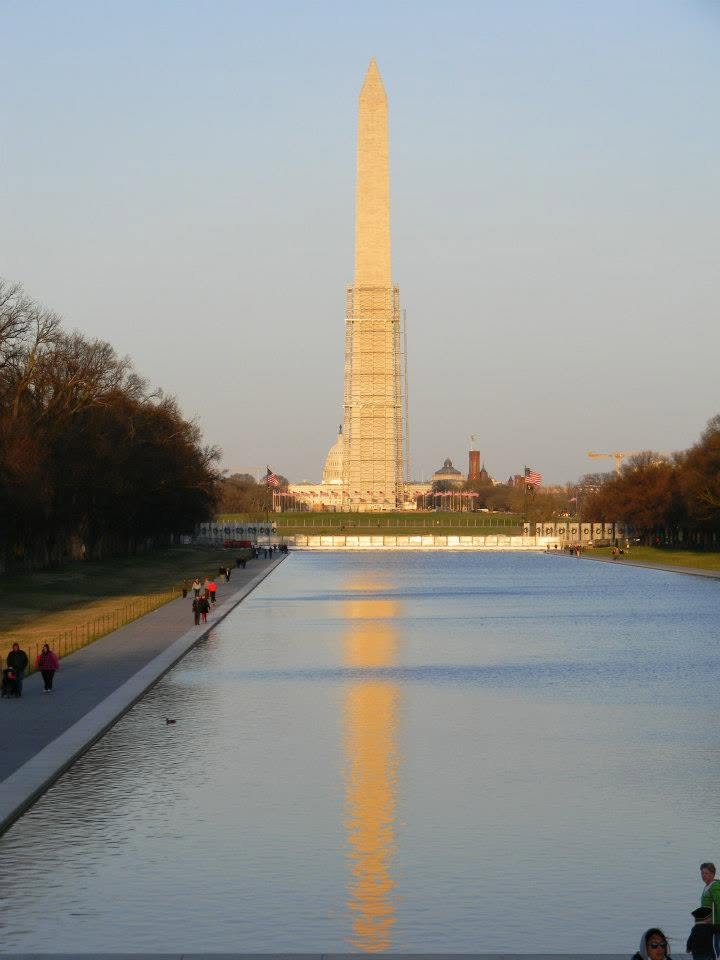
Sources & Further Reading
This article was researched through primary documents, historical scholarship, institutional research, archival collections, and historical visual materials. What follows is a curated research record rather than an exhaustive bibliography.
Citation numbers within the article identify supporting evidence for specific historical claims.
Primary Sources
Henry Knox to George Washington, December 17, 1775
Knox's letter to Washington describing the artillery expedition and using the phrase that became associated with the "Noble Train of Artillery."
Founders Online, National Archives. Original in the George Washington Papers; published in The Papers of George Washington, Revolutionary War Series, vol. 2, pp. 563–565.
Read the document →David Perry, Recollections of an Old Soldier
Perry's firsthand recollections of his service as a Massachusetts provincial soldier, including the 1758 campaign against Carillon. Because the account was written decades after the events, it is used here as a recollection rather than treated as an infallible contemporary record.
Originally published in Windsor, Vermont, in 1822; later reprinted in The Magazine of History.
Locate the text →Stephen H. P. Pell, Fort Ticonderoga: A Short History
A preservation-era history compiled from contemporary sources, particularly useful for the Pell family's preservation story, the flint-and-tinder box that inspired Stephen Pell, and the restoration of the fort.
Reprinted for the Fort Ticonderoga Museum, 1966.
Read the digitized volume →Historical & Institutional Research
Fort Ticonderoga
Institutional research and interpretation concerning the landscape, Carillon, the French and British campaigns, the American Revolution, the Noble Train, archaeology, museum interpretation, and preservation.
Fort Ticonderoga research & collections →Fred Anderson, Crucible of War
Fred Anderson, Crucible of War: The Seven Years' War and the Fate of Empire in British North America, 1754–1766. New York: Alfred A. Knopf, 2000.
National Park Service
Federal historical interpretation used selectively for contextualizing the Revolutionary War, the siege of Boston, and related campaign history.
National Park Service →Further Reading
Fort Ticonderoga Collections & Publications
The museum's publications, collections, archaeological research, and interpretive materials are the best place to continue exploring the site itself.
Explore Fort Ticonderoga →George Washington Papers / Founders Online
A useful starting point for readers interested in the documentary record of the Revolutionary War.
Explore Founders Online →David Perry, Recollections of an Old Soldier
Especially valuable for readers interested in the experience of ordinary provincial soldiers.
Photography & Visual Materials
Original Photography
Unless otherwise noted, photographs of Fort Ticonderoga and its grounds were taken by the author during his July 2026 field visit.
Original photography © Edward A. Wilson.
Ticonderoga and its dependencies, July 6, 1777
Library of Congress, Geography and Map Division.
View source →Plan, Lake Champlain from Fort St. John's to Ticonderoga, with the soundings, rocks, shoals, and sands, surveyed in the years 1778, 1779
Library of Congress, Geography and Map Division.
Battle of Carillon, A.D. 1758
Historical illustration, sourced through World History Encyclopedia.
View image source →La bataille de Fort Carillon en 1758
Public-domain historical image, sourced through PICRYL.
View source →Plan of Carillon or Ticonderoga which was quitted by the Americans in the night from the 5th to the 6th of July 1777
Public-domain historical map, sourced through PICRYL.
View source →Ethan Allen at the Capture of Fort Ticonderoga
Historical illustration by J. S. Davis. Source image accessed through Wikipedia.
View source →This is a curated research record of the principal materials used to develop the article. It is not intended to represent every page, database, or reference consulted during research.